2 Vision engineering: scope, definitions and history
2.1 Machine vision, computer vision and image processing
The terms machine vision, computer vision and image processing overlap, and their boundaries change with professional context. This handbook therefore does not attempt to impose a universal taxonomy. Instead, it establishes a working vocabulary for industrial automation, while recognising the broader usage found in computer science, signal processing and academic research.
2.1.1 Working definitions and industrial success criteria
For this handbook, machine vision is defined as follows:
“Machine vision is the engineering discipline concerned with specifying, designing, integrating and validating an image-based function that observes a physical process and produces information used for inspection, measurement, identification, guidance or control.”
Its scope can therefore include the definition of requirements and reference truth; part or scene presentation; illumination; optics; sensing and acquisition; image processing and computer-vision algorithms; communications and control interfaces; the resulting process action; and evidence that the complete system performs adequately in production.
This systems view is consistent with industrial treatments of machine vision. The European Machine Vision Association (EMVA) presents a chain extending from handling, lighting and optical image formation through acquisition and processing to classification and process feedback [1]. The VDI/VDE/VDMA 2632 series places requirements specification and acceptance testing explicitly within the engineering lifecycle [2].
“A production vision system does not begin when an image reaches memory, and it does not end when an algorithm returns a score.”
Requirements deserve particular attention because a vision system cannot reliably automate a criterion that has never been made explicit. Where an existing human inspection provides the starting point, agreement studies can help establish whether the judgement is sufficiently repeatable to become an automated requirement. The detailed methods for requirements engineering, measurement-system analysis and validation are developed later in this handbook.
Industrial success is therefore judged at system level rather than by an algorithm metric alone. A strong offline classification result cannot compensate for unstable image formation, inadequate cycle time, poor reject timing, unrepresented production variation or an ambiguous acceptance criterion. In practice, performance combines the quality of the decision or measurement with robustness, timing, integration and maintainability.
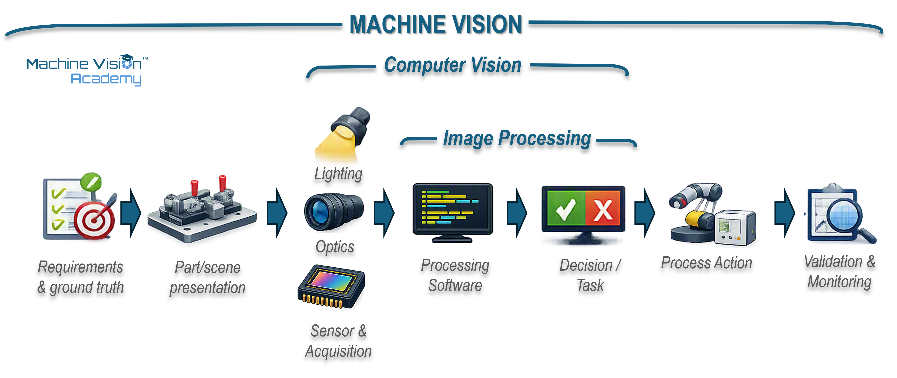
2.1.2 The four fields: image processing, computer vision, machine vision and AI
The following definitions are deliberately operational. They identify the centre of gravity of each field rather than drawing impermeable boundaries. A single industrial application can occupy all four fields at once.
| Field | Working meaning in this handbook | Typical emphasis |
|---|---|---|
| Image processing | Mathematical or computational operations on image data, including correction, enhancement, filtering, transformation, segmentation and representation. | The image and its transformation. |
| Computer vision | Computational methods that infer information about objects, scenes, geometry, events or states from visual data. | Perception and inference from images. |
| Machine vision | The engineering of an image-based system that must perform a useful function within a physical or automated process. | The complete requirements-to-action system. |
| Artificial intelligence | A broad field concerned with systems that perform capabilities associated with intelligence. In later vision chapters, “AI-based vision” will normally denote data-trained models, particularly machine-learning and deep-learning approaches. | Learned inference and decision methods, while recognising that formal AI is broader than deep learning. |
These meanings are not universal. Academic computer vision may include acquisition and image processing within its own scope; image processing is a substantial discipline in signal processing; and machine vision has historically also been used for practical artificial vision more generally. Davies discusses the historical convergence of computer vision and machine vision [3]. The British Machine Vision Association (BMVA) provides a visible example of the overlap: its remit explicitly includes machine vision, image processing and pattern recognition [4].
The same caution applies to AI. ISO/IEC terminology treats artificial intelligence as a broad field and does not equate it with neural networks or deep learning [5]. For clarity in the engineering chapters, the more useful distinction will usually be between classical or explicitly engineered vision methods and learned vision methods. Deep neural networks are a major family of learned methods, but they are not the formal boundary of AI.
“The labels are useful only when they clarify engineering responsibility. They become misleading when a field name is treated as evidence of a capability that has not actually been demonstrated.”
2.1.3 Relations, overlaps and typical confusions
Terminological overlap matters most when expertise is assessed. A computer-vision specialist may have considerable depth in segmentation, detection, pose estimation, deep learning or open-source algorithm development while having limited experience of illumination, lenses, triggering, industrial communications or reject mechanisms. An experienced machine-vision integrator may show the reverse profile: strong acquisition and production-system engineering, but less depth in advanced computer-vision research. Neither profile is inherently more complete; the useful question is which part of the problem has actually been engineered.
“When assessing machine-vision expertise, ask which parts of the requirements-to-action chain the person has designed, commissioned and validated—not only which algorithms or products they have used.”
A second confusion arises from the word train. Classical pattern-matching systems can require a template image and may expose a command called Train, but this does not by itself make them machine-learning systems. Cognex PatMax, for example, represents a trained pattern using geometric features and their spatial relationships [6], [7]. HALCON shape-based matching similarly searches for instances of a shape model that has been created previously [8]. These are classical model- or template-based techniques rather than neural models fitted to a labelled dataset.
By contrast, learned vision methods estimate model parameters from training data; deep learning is a prominent example. The distinction matters because AI is now also a commercial descriptor. The UK Advertising Standards Authority has documented the widespread use of the term in advertising and the associated regulatory implications [9]. For this handbook, an AI claim is therefore more informative when it states what is learned from data, what model is trained and how performance on unseen data is demonstrated.
The practical relationship is simple enough to carry forward: image processing and computer vision provide computational techniques; machine learning adds families of data-trained inference techniques; and machine vision integrates whichever techniques are appropriate into a physical system that must satisfy an industrial requirement. Later chapters develop acquisition engineering, algorithms, learned vision, integration and validation in detail.
2.2 Historical development: several timelines, one discipline
Machine vision does not have a single birthday. One historical clock started when photographs became arrays of numbers; another when researchers began asking computers to recover shape and meaning from those numbers. A third started on the factory floor, where the decisive question was not whether a machine could understand an arbitrary scene, but whether it could inspect, measure or guide reliably at production speed. Consumer products then made many of the same technologies familiar, while standards emerged to make an increasingly diverse industrial ecosystem interoperable.
Those clocks do not tick at the same rate. A technique can exist in a research paper for years before sensors, processors, software tools and interfaces make it practical in production. Equally, a supposedly new consumer feature may have a surprisingly old industrial ancestor. The history is therefore presented here as a set of parallel timelines rather than a single sequence of inventions. The purpose is orientation: later chapters return to the individual technologies, architectures and validation methods in engineering detail.
2.2.1 The innovation timeline: when images became computable
A convenient starting point is 1957. At the US National Bureau of Standards, now NIST, Russell Kirsch and colleagues used a rotating-drum scanner with the SEAC computer to digitise a photograph of Kirsch’s infant son, Walden. The image was only 176 pixels on each side, but it established the essential abstraction behind modern vision engineering: a picture could be represented as numbers and therefore manipulated by a computer [10].
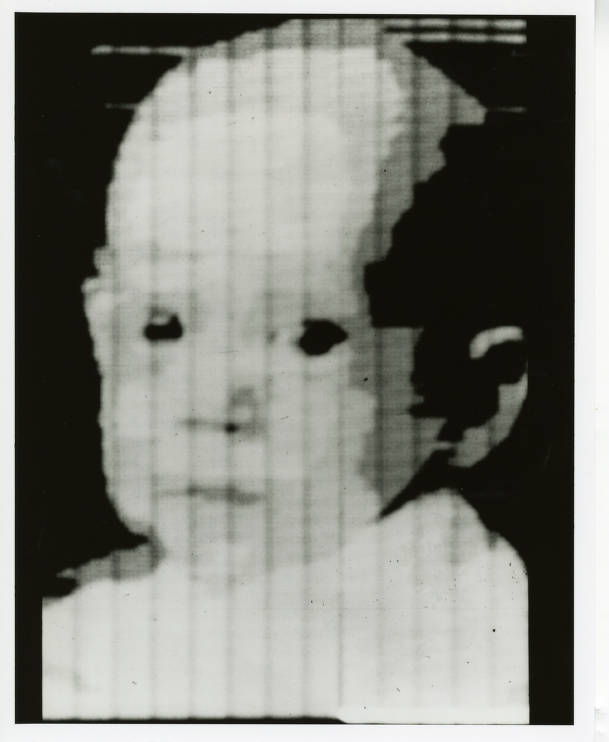
The next step was to do useful work to those numbers. During the Ranger and Surveyor lunar programmes, engineers at NASA’s Jet Propulsion Laboratory digitised and processed spacecraft imagery to reduce noise, compensate for distortions and improve visibility. Ranger 7 alone returned 4,308 images in the final minutes before lunar impact on 31 July 1964 [11], [12]. The lineage from spacecraft image correction to industrial flat-field correction, geometric calibration and computational photography is not direct in every implementation, but the engineering idea is familiar: image formation is imperfect, and computation can make the measurement more useful. Later in this handbook we, cover techniques to enhance images for industrial applications.
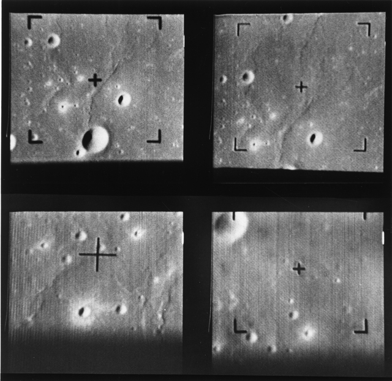
At roughly the same time, computer vision was becoming a research problem in its own right. Lawrence Roberts’ 1963 MIT thesis analysed simple three-dimensional solids from two-dimensional images [13]. In 1966 Seymour Papert wrote the MIT Artificial Intelligence Memo commonly known as the Summer Vision Project, proposing that summer students should connect a camera to a computer and tackle a sequence of visual tasks [14]. The story is often retold as a single optimistic instruction from Marvin Minsky; the surviving proposal is Papert’s. Either version captures the mood: researchers had not yet discovered how much of intelligence is hidden inside apparently simple acts of seeing.
The sensing hardware was changing just as quickly. Willard Boyle and George Smith described the charge-coupled device (CCD) in 1970 after its invention at Bell Laboratories in 1969 [15]. Five years later Steven Sasson at Kodak assembled a self-contained solid-state digital still camera using a CCD. The prototype recorded roughly 0.01 megapixels to a cassette and took about 23 seconds to store an image [16]. It was not a product, but it made a future without photographic film physically demonstrable.
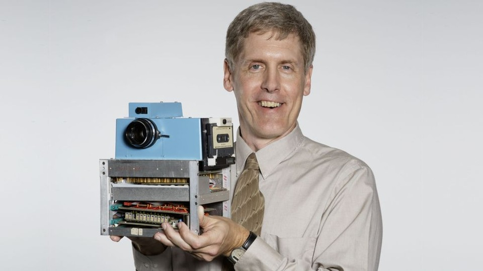
Sasson’s 1975 camera is useful precisely because it looks so unlike a modern camera: about the size of a toaster, with a cassette recorder and a separate playback arrangement. The important innovation was not convenience; it was that the complete image chain - sensor, digitisation, storage and display - had become electronic. An engineering prototype can be historically important long before it is commercially sensible; this one looked like a kitchen appliance and stored its pictures on the same cassette tapes people used for mix-tapes [16]. The prototype was rejected by Kodak in an attempt to protect their dominance in the analog photography business.
Digitisation was only the beginning. From the 1960s to the 1980s, a classical toolbox accumulated that is still recognisable in industrial vision software. Hu’s 1962 moment invariants provided compact shape descriptors designed to remain useful under changes of position, scale and orientation [17]. Rosenfeld and Pfaltz’s 1966 sequential picture operations included connected-component labelling - the basis of what machine-vision engineers still call blob analysis [18]. Otsu’s 1979 threshold-selection method gave a principled way to separate foreground from background [19], while Ballard’s 1981 generalised Hough transform extended voting-based detection from simple analytic curves to arbitrary shapes [20]. Fischler and Bolles’ RANSAC, also published in 1981, made geometric model fitting robust to outliers [21]. Canny’s 1986 edge detector and Harris and Stephens’ 1988 corner detector then supplied local features that became enduring building blocks [22], [23]. The terminology sounds historical; the underlying operations - segment, label, describe, fit, locate and measure - remain everyday machine-vision tasks.
Some of the mathematics behind recognition was older than digital imaging itself. Pearson’s 1901 closest-fit formulation is an origin point for principal-component analysis (PCA) [24]. Much later, Turk and Pentland’s 1991 “eigenfaces” showed how face images could be represented in a much lower-dimensional appearance space [25]. The method is not a direct ancestor of every modern learned embedding, but the engineering instinct is familiar: retain the variation useful to a decision while discarding dimensions that contribute little.
Alongside this practical toolbox, the field was acquiring a language for thinking about vision. David Marr’s posthumous 1982 book framed visual processing at computational, algorithmic/representational and implementation levels [26]. In 1986 Rumelhart, Hinton and Williams published the influential back-propagation paper showing how multilayer networks could learn internal representations by adjusting connection weights [27]. Neither event immediately transformed factory inspection, but both helped define computational and learning frameworks on which later work would build.
A parallel strand asked not only what a machine could see, but what it could do with the result. SRI’s Shakey project (1966-1972) combined a television camera with perception, planning and mobile action [28]; in 1979 the Stanford Cart used stereoscopic vision to cross a chair-strewn room autonomously, although its 20-metre journey took about five hours [29]. In industry, Westinghouse’s 1983 APAS research used machine vision for positioning, orientation and inspection in flexible assembly [30]. Tsai and Lenz’s 1989 hand-eye calibration method provided a practical mathematical bridge between camera and robot coordinate frames [31]; Besl and McKay’s 1992 ICP method became foundational for aligning measured 3D shapes with models [32]; and by 1996 visual-servo research had formalised how image measurements could close the motion-control loop [33]. The recurring systems problem was already clear: a visual result becomes useful to a robot only when it can be converted into geometry and feedback the machine can act upon.
The Stanford Cart is a useful reminder of how quickly expectations move. Its 1979 autonomous run through a room was a landmark in vision-guided navigation, yet the cart stopped roughly every metre while its computers spent ten to fifteen minutes interpreting stereo images and choosing the next move [29]. What reads today like an impractically slow robot was, at the time, evidence that a machine could use vision to plan its own path. It advanced at roughly the pace of a contemplative tortoise; by the standards of 1979, that was astonishing.
Sensor integration then changed the economics. Eric Fossum’s work on CMOS active-pixel sensors at JPL in the early 1990s led to the “camera-on-a-chip” architecture reviewed in his 1997 IEEE paper [34]. Meanwhile, convolutional neural networks were becoming practical for constrained recognition tasks: LeCun and colleagues reported gradient-based document-recognition systems in 1998 [35]. These systems still addressed tightly framed problems, but they demonstrated that useful visual features could increasingly be learned rather than entirely hand-designed.
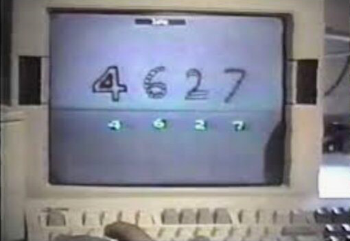
Hand-engineered recognition was also maturing. Viola and Jones’ 2001 boosted cascade brought fast face detection into real-time products [36], while Lowe’s SIFT formulation in 2004 made local image features much more robust to changes in scale, orientation and viewpoint [37]. This was the mature feature-engineering era: carefully designed representations, geometric consistency and robust matching rather than end-to-end learned features.
The next discontinuity came from scale rather than a single new mathematical idea. ImageNet, introduced in 2009, supplied millions of labelled images organised around a large semantic hierarchy [38]. In 2012 Alex Krizhevsky, Ilya Sutskever and Geoffrey Hinton used a deep convolutional network and GPUs to win the ImageNet challenge by a striking margin [39]. The result accelerated a shift already under way: instead of engineers specifying most visual features by hand, increasingly large parts of the representation could be learned from data. Industrial products would absorb that change more cautiously, because a production line values repeatability, latency, traceability and failure handling as much as benchmark accuracy.
AlexNet was a turning point, not an endpoint. R-CNN showed in 2014 how deep features could drive object detection [40]; U-Net in 2015 established an influential encoder-decoder architecture for dense segmentation [41]; ResNet made substantially deeper models trainable through residual connections [42]; and YOLO reframed object detection as a single real-time network [43]. By 2020-2021, Vision Transformers showed that self-attention could compete with convolution as a core visual representation [44]. Later chapters return to these architectures in detail; here they simply mark how quickly learned vision expanded from classification into localisation, detection, segmentation and more general visual representations.
A parallel software timeline made those methods much easier to reproduce and reuse. Intel’s OpenCV project reached its first public release in June 2000, putting a broad collection of computer-vision routines into an open-source library that could run on ordinary computers [45]. Google open-sourced TensorFlow on 9 November 2015, turning infrastructure developed for large-scale machine learning into a generally available framework [46], [47]. PyTorch development began at Facebook/Meta in 2016 and the framework was released publicly in January 2017 [48], [49]. These libraries did not originate as industrial machine-vision products, but they greatly lowered the barrier between research code and deployable vision software. OpenCV in particular became a common foundation for bespoke computer-vision applications, while TensorFlow and PyTorch accelerated the spread of trained neural models into both research and commercial vision.
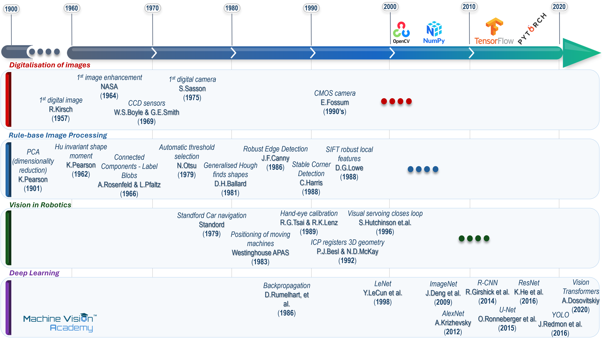
2.2.2 The industrial timeline: from bespoke lab prototypes to deployable vision
Industrial machine vision followed a different rhythm from academic computer vision. Early systems of the 1970s and 1980s were often sizeable, expensive and specialised. A3’s historical accounts describe an era in which VME backplanes and dedicated image-processing hardware were commonplace, while suitable cameras were scarce and costly [50]. The important industrial breakthrough was therefore not one algorithm but the gradual availability of an entire stack: reliable solid-state cameras, faster processors, frame grabbers, usable software, industrial I/O and engineers who knew how to make the image itself repeatable.
The creation of the Automated Imaging Association (AIA) in 1984 is a useful marker of that transition from experimental technology to recognisable industry [51]. By the late 1980s and early 1990s, camera suppliers were designing products specifically for machine-vision requirements, personal computers were displacing proprietary processing architectures, and systems were becoming sufficiently reliable for broader deployment. This is the period often remembered within the industry as machine vision’s commercial coming of age.
The 1990s also changed where the computation lived. PC-based systems benefited from commodity processors and flexible expansion hardware; smart cameras moved processing closer to the point of acquisition. A3 notes that the first smart cameras appeared in the 1990s, although the boundary between a “vision sensor” and a “smart camera” has never been perfectly sharp [50]. This architectural choice - central computer, embedded controller or intelligence inside the camera - remains active today, only with much more computing power available in every category.
Standardisation was another quiet revolution. Camera Link, developed in 2000, standardised a high-performance digital connection between cameras and frame grabbers that could be purchased and install in an engineering PC. GigE Vision followed in 2006 and USB3 Vision in 2013, while Camera Link HS and CoaXPress addressed higher-bandwidth applications [52]. The first module of the EMVA 1288 sensor-characterisation standard was released in 2005 [53], while GenICam, whose working group began in 2003 and issued its first release in 2006, supplied a common software model for camera configuration across different transport technologies [54]. These standards mattered because they reduced ambiguity and the cost of changing components: machine builders could increasingly compare sensors more consistently and select cameras, interfaces and software from different suppliers without redesigning the whole acquisition architecture.
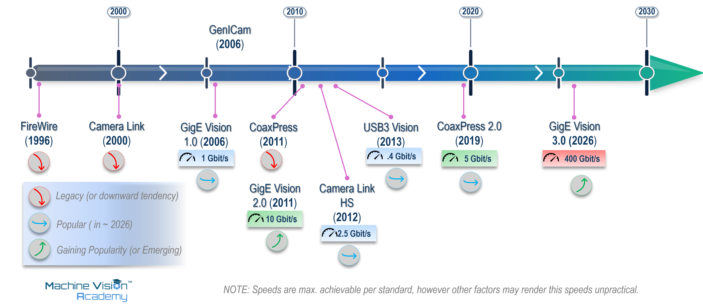
Three-dimensional sensing then moved from specialist metrology towards mainstream in-line inspection. Laser triangulation profilers, time-of-flight cameras, structured-light systems and later compact 3D smart sensors made height and shape available as ordinary production data rather than laboratory measurements. By the 2010s, products such as LMI’s all-in-one Gocator 3110 combined 3D point-cloud acquisition, embedded measurement tools and control decisions in a single sensor [55]. The historical direction is consistent: functions that once required a rack of hardware migrate into smaller, more standardised and more autonomous devices.
The same pattern is now visible with learned vision. Deep learning first changed academic benchmarks, then appeared as server- or GPU-based industrial software, and eventually moved into deployable smart-camera products. Cognex, for example, launched the In-Sight D900 in 2020 and described it as the first industrial smart camera with embedded deep-learning software [56]. OMRON introduced AI-based defect-detection functions into its FH platform in the same period [57]. The industrial adoption curve is slower than the research curve, but often more consequential: once a method survives the requirements of cycle time, maintenance and controlled change, it can be replicated across thousands of production assets.
2.2.3 The product timeline: how the industrial toolbox formed
Industrial machine vision is unusually shaped by product companies. Research establishes what is possible, but suppliers decide how that possibility reaches an engineer: as a camera, frame grabber, library, smart sensor, development environment, 3D profiler or integrated inspection platform. Table 2.1 therefore records representative milestones from companies that have had a visible influence on the industrial toolbox. It is not intended as a ranking or an exhaustive corporate history.
Claims of “first” require care. Where the source is a company archive or press release, the wording below treats the claim as the supplier’s claim rather than as an uncontested historical fact. This matters because product categories evolve. A 1991 “smart image sensor”, a 1995 “industrial smart camera” and a later fully programmable smart camera can all plausibly be first under different definitions.
| Date | Company | Milestone | Why it mattered / source status |
|---|---|---|---|
| 1968 | Micro-Epsilon | Company founded; later specialised in precision displacement and profile measurement. | Its 1992 history entry records the launch of its first digital laser-triangulation sensors, followed by laser scanners and 3D inspection systems [58]. |
| 1974 | KEYENCE | Company founded in Japan with a focus on automation and sensing. | Its corporate timeline marks the 2007 LJ Series 2D laser profiler as a high-precision non-contact measurement milestone [59]. |
| 1976 | National Instruments | Company founded around computer-based instrumentation. | LabVIEW arrived in 1986; NI later extended the same “software-defined instrument” idea into PC-based machine vision [60]. |
| 1976 | Matrox | Matrox founded; a dedicated imaging lineage developed alongside graphics and video. | Matrox records the 1986 MVP-AT as the world’s first PC-based image-processing accelerator and the 1993 Matrox Imaging Library (MIL) as an early hardware-independent vision library [61]. |
| 1980 | DALSA / Teledyne DALSA | DALSA established in Waterloo, Canada. | In the late 1980s DALSA says it released the first commercially available high-performance 4K line-scan image-sensor chip, an important step for high-resolution industrial scanning [62]. |
| 1981-1982 | Cognex | Cognex founded in 1981; DataMan followed in 1982. | Cognex describes DataMan as the world’s first industrial OCR system for direct-marked characters on parts - an early example of vision sold as a production tool rather than a research system [63]. |
| c. 1984 | Adept Technologies | AdeptVision developed as an integrated commercial robot-vision system, building on earlier Unimation/Machine Intelligence Corporation vision work. | AdeptVision is an early example of vision becoming part of a commercial robot platform rather than a completely separate inspection system. A3 retrospective material describes vision as integrated into the Adept robot controller and records deployment in thousands of systems [64]. The exact product boundary and first-release date are treated as approximate. |
| 1988 | Basler | Basler founded. | The company later concentrated on digital industrial cameras; in 2016 it introduced its first 3D camera, a time-of-flight model [65]. |
| Late 1990s | National Instruments | IMAQ Vision integrated machine-vision/image-processing functions with LabVIEW. | Vision became another software-defined engineering task inside a graphical automation environment rather than an isolated vision workstation [60], [66]. |
| 1991 | DVT | SmartImage Sensor introduced. | DVT representatives later described this as the first smart camera. The claim is useful but definition-dependent [67]. |
| 1992 | Micro-Epsilon | First digital laser-triangulation sensors in the company timeline. | Shows the parallel growth of optical metrology and machine vision rather than a purely 2D-camera history [58]. |
| 1993 | Matrox Imaging | Matrox Imaging Library (MIL) introduced. | A long-lived example of the software-library model: one API and toolset abstracting changing acquisition hardware [61]. |
| 1995 | Vision Components | VC11 presented. | Vision Components describes the DSP-based VC11 as the first industrial smart camera suitable for series use [68]. |
| 1996 | MVTec | MVTec founded as a spin-off of the Technical University of Munich and FORWISS. | HALCON became a major hardware-independent industrial machine-vision software environment, reinforcing software as a portable layer above cameras and frame grabbers [69]. |
| 1998 | OMRON | F30 compact machine-vision system introduced. | Contemporary trade coverage describes the F30 as integrating camera, lighting and processor in a compact housing for simple inspection. OMRON also marketed the F10 pattern-matching sensor in this period, but the F10 used a sensor head plus amplifier/processing unit; calling both products single-body smart cameras would therefore be misleading [70], [71]. |
| 2000 | Cognex | In-Sight family introduced; In-Sight 2000 announced in March 2000. | Cognex entered the low-cost factory-floor vision-sensor market with a spreadsheet-configured system that did not require a PC for operation. Cognex annual reports confirm the In-Sight family was introduced in 2000 [72], [73]. This is a major Cognex smart/embedded-vision milestone, but not an uncontested claim to the first smart camera. |
| 2002 | Cognex | VisionPro software development environment introduced. | Cognex’s 2002 Form 10-K states that VisionPro was introduced in early 2002 as an ActiveX-based environment exposing Cognex core vision tools in a PC/Microsoft environment [74]. The often-repeated 1998 date for a CVL-to-VisionPro transition was not supported by the primary material reviewed, so it is not used here. |
| c. 2004 | KUKA / Cognex | KUKA.Vision for the KRC2 generation provided an integrated route for using Cognex In-Sight smart cameras with KUKA robots. | The exact first-release year has not been independently established in the sources reviewed. Cognex documentation confirms KUKA KR C2 and KR C2 Edition 2005 support and a KUKA-specific In-Sight communication mode [75]. Historically, the integration illustrates a partnership strategy in which a robot manufacturer adopted a specialist vision supplier rather than developing the complete vision stack internally. |
| 2005 | Cognex / DVT | Cognex completed its acquisition of DVT Corporation on 9 May 2005. | DVT was a significant supplier of low-cost vision sensors and had an established worldwide distributor network. |
| 2005 | Matrox Imaging | Iris P-Series programmable smart cameras expanded. | Contemporary coverage records the Iris P300H in July 2005 and remote-head P-Series models in September. The cameras combined image sensing, embedded PC-class processing, Windows CE .NET and the Matrox Imaging Library API [76], [77]. |
| 2006 | FANUC Robotics | iRVision introduced as FANUC’s built-in robot-vision package for the R-J3iC controller family. | A contemporary FANUC announcement described iRVision as the company’s first built-in vision package for the R-J3iC family, requiring only a camera and cable rather than separate processing hardware [78]. It represents the vertically integrated route: robot manufacturer, controller and vision environment supplied as one platform. |
| 2007 | KEYENCE | LJ Series 2D laser profiler launched. | Representative of laser profiling moving into accessible, in-line non-contact measurement [59]. |
| 2007-2008 | KEYENCE | CV-5000 generation of controller-based vision systems entered service. | The CV-5000/CV-3000 families are controller-based vision systems rather than self-contained smart cameras. VS Series will later offer smart-camera formats [79]. |
| 2011 | Teledyne / DALSA | Teledyne completed its acquisition of DALSA. | A marker of consolidation around portfolios spanning sensors, cameras, acquisition and imaging components [80]. |
| c. 2012-2013 | KUKA / Cognex | KUKA.VisionTech brought Cognex VisionPro-based 2D vision functionality into the KUKA robot environment for localisation, inspection and code/OCR tasks. | Cognex identifies KUKA.VisionTech as integrating VisionPro software with KUKA robots [81]. A KUKA VisionTech 2.1 manual is dated October 2013 [82]; the initial release date is therefore shown approximately. It illustrates deep integration of a specialist third-party machine-vision stack with a robot manufacturer’s platform. |
| 2013 | LMI Technologies | Gocator 3110 launched. | LMI described it as the industry’s first all-in-one 3D smart snapshot sensor, combining acquisition, measurement and control decisions [55]. |
| 2016 | Basler | First Basler 3D camera, using time-of-flight technology. | Shows industrial-camera suppliers expanding beyond conventional 2D acquisition into depth sensing [65]. |
| 2017 | Cognex / ViDi Systems | Cognex acquired ViDi Systems SA on 4 April 2017. | The acquisition brought deep-learning software developed specifically for industrial machine vision into Cognex’s Vision Products business and was an important step in adding learned inspection to its commercial portfolio [83]. |
| 2018 | OMRON | FHV7 smart camera announced. | OMRON highlighted an integrated multi-colour light and high-resolution sensor as a way to make one camera adapt to high-mix inspection [84]. |
| 2020 | Cognex | In-Sight D900 deep-learning smart camera launched. | Cognex claimed the first industrial smart camera with deep learning embedded in the device [56]. |
| 2020 | OMRON | FH Series gained AI defect-detection capability. | OMRON described the release as an industry-first defect-detection AI for its vision platform; the “first” is a vendor claim [57]. |
| 2022 | Zebra / Matrox Imaging | Zebra completed the acquisition of Matrox Imaging. | The transaction brought Matrox’s frame grabbers, machine-vision software and systems into Zebra’s industrial automation portfolio [85]. |
DVT literature dates its SmartImage Sensor to 1991 and describes it as the first smart camera [67]. Vision Components dates the VC11 to 1995 and describes it as the first industrial, series-ready smart camera [68]. A3 itself notes that the border between smart cameras and vision sensors has long been grey [50]. The apparent contradiction is historically useful: “first” depends on whether the defining feature is onboard processing, stand-alone operation, programmability, industrial I/O, or readiness for series deployment. In this chapter, contested firsts are therefore attributed rather than presented as universal facts.
Seen together, these product histories show several different routes by which machine vision matured. NI and MVTec helped make vision programmable and reusable through systems, libraries and development environments. KEYENCE and OMRON pushed highly integrated sensors and smart cameras towards users who might not be vision specialists. Cognex and Matrox (now part of Zebra) have pursued both product strategies, PC based libraries and integrated-edge devices, with increased focus on smart cameras in recent years. DALSA and Basler illustrate the camera and sensor lineage, while LMI and Micro-Epsilon show how optical metrology and 3D profiling became part of the same industrial ecosystem. Robot manufacturers also brought vision closer to the automation platform: FANUC introduced its controller-integrated iRVision in 2006 [78], while KUKA’s collaboration with Cognex is visible in KRC2-era In-Sight integration and later in KUKA.VisionTech around 2012-2013, which integrated Cognex ecosystem into the robot environment [75], [81]. These different approaches - proprietary integrated vision, specialist third-party software and increasingly autonomous smart cameras - illustrate how the boundaries between vision, robotics and automation have steadily blurred as suppliers have added software, AI, 3D and embedded processing.
Robot-integrated vision predates the commercial products listed here. The Adept, KUKA and FANUC entries should therefore be read as representative approaches to packaging vision within robot automation platforms, not as claims for the first vision-guided industrial robot.
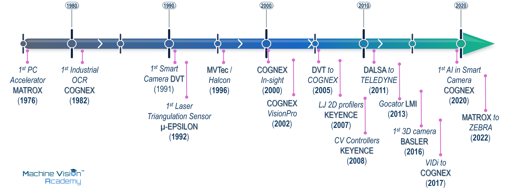
2.2.4 The everyday consumer timeline: when vision escaped the laboratory and factory
Some of the best historical anchors to get a true sense of the timescale are ordinary everyday consumer devices or services. On 26 June 1974, the first installation of UPC supermarket scanners entered service at a Marsh supermarket in Troy, Ohio. A packet of Wrigley’s chewing gum became the first purchase made with the new scanner system [86]. The system did not “understand” groceries; it read a deliberately designed visual code with exceptional reliability. That is an industrial lesson in miniature: when the environment and target can be engineered, a narrow visual task can become commercially transformative.
The same inversion appears in the history of the QR Code. DENSO WAVE introduced it in 1994 for manufacturing and logistics, where conventional barcodes were becoming too limited for the amount and speed of information required. Position-detection patterns at three corners made the symbol easy to locate and orient. DENSO WAVE then promoted open use of the standardised code, helping a factory identification technology migrate into tickets, payments and - eventually - restaurant menus [87].
The QR Code is a useful reminder that consumer adoption can come long after industrial invention. DENSO WAVE developed the code in 1994 for production and logistics; camera-equipped phones helped it spread in the 2000s, and later mass use made the square pattern one of the most recognisable pieces of machine-readable imagery in everyday life. A code engineered to survive the grime of a car-parts plant turned out to be equally at home surviving a laminated menu [87].
A less consequential but more charming example came from Cambridge. In late 1991, researchers in the University of Cambridge Computer Laboratory pointed a camera at the Trojan Room coffee pot so colleagues elsewhere in the building could avoid a wasted trip when it was empty. The local network application was connected to the World Wide Web in 1993 and became the first webcam .. and the first reality TV shows [88]. The historical significance is disproportionate to the problem: remote visual sensing had become a service rather than a laboratory experiment.
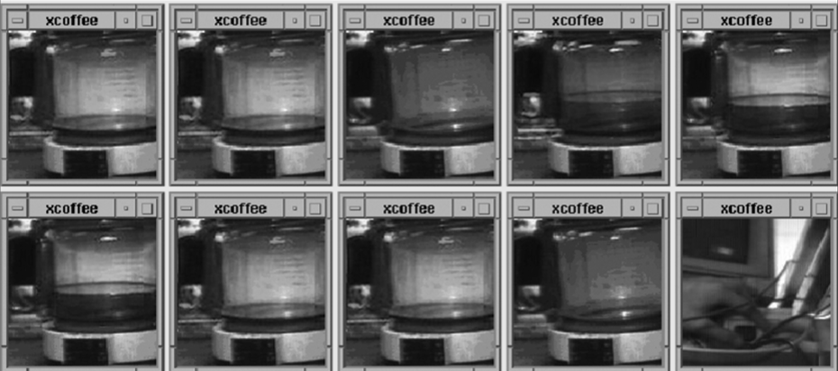
The Trojan Room system is a good antidote to technological grand narratives. The first webcam was not designed for telepresence, social media or surveillance; it solved what may be the most relatable problem in the history of computer vision: sparing researchers the walk across a building only to find the pot empty. It was switched off in August 2001, after a decade of faithful service [88].
By the 2000s, visual computation was increasingly disappearing inside everyday products. Fast face detectors allowed compact cameras to draw focus boxes around faces, while embedded image processing began correcting photographs before the user even saw them.
In 2007 real-time flash-eye detection was introduced in smart phones’ firmware by Photonation [89]. For many readers, particularly those born in the new millennium, red-eye may be an unfamiliar photographic artefact precisely because its detection and correction have become so commonplace. For earlier generations, however, the unintended vampire look was a familiar feature of the family photo album. Developments such as these marked a subtle but important transition: the camera was becoming more than a sensor; it was beginning to interpret and modify its own images.
Kinect brought a different kind of machine vision into the living room. Microsoft launched Kinect for Xbox 360 on 4 November 2010, allowing users to control games through body movement and voice [90]. Guinness World Records records eight million units sold in its first 60 days, making it the fastest-selling gaming peripheral at the time [91]. For millions of people, depth sensing and body tracking arrived not as a robotics demonstration or a metrology system, but as the instruction to stand in front of a television and move.
By the middle of the next decade, semantic vision had become an almost invisible service. Google Photos launched in 2015 with automatic organisation by people, places and things, without requiring users to tag every image manually [92]. Two years later Apple’s iPhone X made 3D face recognition an everyday authentication gesture: Face ID combined a dot projector, infrared camera and flood illuminator, projecting more than 30,000 invisible infrared dots and using neural networks to build a mathematical representation of the face [93]. These features are easy to take for granted precisely because the vision system is no longer presented as a separate application; it is simply part of using the product.
In medicine, the same broad progression towards automated visual decision-making reached a much more consequential threshold in 2018, when IDx-DR was authorised in the United States as an autonomous AI-based diagnostic system for diabetic retinopathy. Its pivotal study compared autonomous analysis of retinal photographs with a specialist reference standard [94]. The mechanisms behind a supermarket scanner, automatic red-eye correction, body tracking, face authentication and retinal diagnosis are very different, but the systems pattern is recognisable: capture an image, extract useful information, make a decision and determine what happens next.
2.2.5 What the history reveals
Viewed as parallel timelines, the history is less a sequence of replacements than a sequence of layers. Digital image processing did not disappear when computer vision arrived; classical geometry did not disappear when statistical learning became fashionable; PC-based architectures did not disappear when smart cameras became practical. Industrial systems continue to combine techniques from different decades because the correct choice is governed by the task, not by historical novelty.
A second pattern is migration. The same enabling technology repeatedly crosses domains: space programmes helped advance digital image enhancement and CMOS sensing; factory identification produced the QR Code that later became a consumer interface; research in learned representations eventually became a tool for production defect inspection. The path rarely runs in one direction from university to factory to consumer. Vision engineering is an ecosystem in which ideas, components and constraints circulate.
The third pattern is that industrial progress is often less dramatic than research progress and more dependent on integration. A better detector matters, but so do a stable light, a faster interface, a camera that can be replaced without rewriting software, a 3D sensor that performs its own measurement, and a validation method that explains what “good enough” means. This is why the history of machine vision cannot be told only through algorithms. It is equally the history of sensors, optics, computing architectures, software tools, standards, companies and the production problems that forced them to work together.
Vision technology becomes transformative when three things coincide: a useful visual method, hardware inexpensive and reliable enough to deploy, and an engineering environment that makes the method repeatable. Research changes what can be imagined; product engineering changes what can be installed; standards and validation change what can be scaled and trusted.
2.3 Industrial application families
The previous chapter established what machine vision is and how the discipline developed. In this chapter we address what machine vision is for. On a factory floor, a technology is valuable because it solves an industrial task reliably, at production speed and, in some sectors, within a regulated quality system. This section is therefore organised around tasks rather than technologies.
A large proportion of industrial vision applications can be grouped into four families: measurement, defect inspection, identification and guidance. Measurement returns a dimension or other quantitative value against a stated tolerance. Inspection determines whether a part is complete, correctly assembled and free of unacceptable defects. Identification reads a code or character string and associates the item with a record. Guidance locates a feature or object and provides coordinates that an automated system can act upon. Many deployed systems combine two or more of these functions in sequence.
The four application families considered here deliberately reflect the industrial focus of this handbook; they do not represent the full scope of machine and computer vision. Important neighbouring domains include biometrics, such as face, fingerprint and iris recognition; medical imaging and computer-aided diagnosis; advanced driver-assistance and autonomous systems, where visual perception supports functions such as lane keeping, object and pedestrian detection and navigation; and remote sensing and autonomous robotics, where visual information is used to interpret and act within less controlled environments. These fields are outside the principal scope of this handbook, but their development remains relevant to industrial vision. As the historical development of the discipline has already shown, technological progress is rarely linear or confined to one application domain: advances in sensors, learned representations, three-dimensional perception, real-time processing and validation frequently migrate between research, consumer, medical, automotive and industrial applications. Technologies being developed in these neighbouring fields can therefore be expected to influence the future capabilities and architectures of industrial automation.
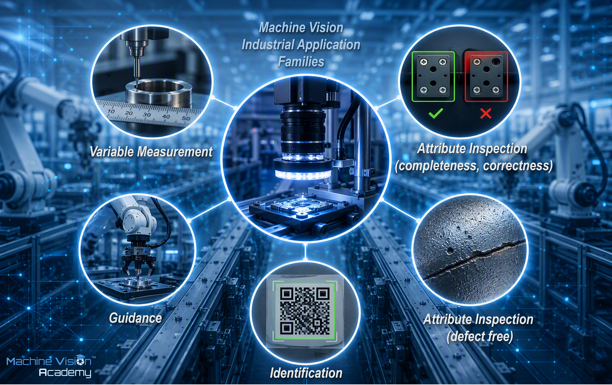
The motivation for automating visual inspection in the factory floor is longstanding. Manual visual inspection is repetitive, can be affected by fatigue and variation between inspectors, is difficult to document consistently, and may not keep pace with high-throughput production. Automated visual inspection can apply a defined decision process consistently under controlled conditions and can retain a record of its measurements and decisions [95].
An alternative but complementary classification, borrowed from quality engineering, is useful because it often points towards the appropriate measurement and decision strategy: inspection by variables and inspection by attributes. ISO 3951 describes sampling procedures for inspection by variables, whereas ISO 2859 addresses inspection by attributes [96], [97].
A variable inspection produces a quantitative result on a scale—for example, a diameter, gap or angle—that can be compared with a specification limit and verified against a calibrated reference. The measurement tasks in Figure 2.10 commonly have this form. They are a natural fit for deterministic, rule-based vision: an edge is located, a distance is calculated, a calibration is applied and the result is compared with a tolerance.
An attribute inspection produces a categorical result such as present/absent, conforming/non-conforming or scratched/clean. The underlying decision can still be derived from quantitative measurements; what distinguishes the attribute case is the categorical result used for acceptance. Some attribute checks are readily implemented with hand-crafted features and explicit thresholds. Others involve appearance criteria that are difficult to express analytically and may benefit from labelled examples and learned models. The choice between rule-based and learned methods therefore depends on the nature of the feature, the available data and the required evidence, rather than on the attribute/variable label alone.
Where practical, a variable output is preferable because it preserves information beyond pass or fail. A measured value allows acceptance thresholds to be revised and, more importantly, supports statistical analysis and process monitoring: a population can drift towards a limit long before the reject rate changes.
The difficulty is establishing a meaningful scale. A variable measurement should ideally be calibratable against a recognised reference, such as millimetres or degrees; derived image features such as contrast or texture scores may be much harder to calibrate meaningfully. A useful variable acceptance criterion also requires process characterisation to establish how values on that scale relate to product performance. This is good engineering practice, but it requires experimental evidence and is not always practical.
In reality, the machine-vision engineer often inherits an inspection already defined as an attribute judgement, even when a variable formulation might have been possible.
2.3.1 Measurement and non-contact gauging
Measurement is the family that produces a quantitative value—a length, diameter, angle, gap or height—and a principal advantage of vision-based gauging is that it can be non-contact. A traditional coordinate-measuring machine obtains dimensions by probing a part physically; an imaging system obtains information optically. This can be advantageous for delicate, sterile or soft parts and can permit in-line measurement of every item rather than off-line sampling. The resulting measurements can also feed statistical process control, turning inspection into a continuous source of process information.
Accurate gauging depends strongly on image formation. Telecentric optics can reduce magnification changes caused by object-distance variation; back-lighting can create a high-contrast silhouette; and sub-pixel edge localisation can estimate edge position more finely than the pixel sampling interval. These techniques are among the considerations that distinguish a traceable measurement system from one that merely displays a precise-looking number [98].
A vision gauge initially derives a value from image coordinates; calibration against a traceable reference establishes the relationship to physical units, while measurement-uncertainty analysis determines how confidently the result can be used. A non-contact optical measurement and a contact CMM measurement of the same nominal feature can differ because the two systems interact with and sample the part differently. ISO 10360-7 specifies acceptance and reverification tests for Cartesian CMMs equipped with imaging probing systems operating in discrete-point probing mode [99]. Repeatability, reproducibility, bias and uncertainty are therefore as important as the nominal image resolution and would be covered in later chapters.
The measurement toolkit is predominantly deterministic: caliper and edge-pair gauges, line and circle fitting, blob geometry and sub-pixel contour analysis in two dimensions; and laser triangulation, profilometry, structured light and other optical ranging methods for height and shape. Learned methods can assist some localisation or interpretation tasks, but precise dimensional gauging still depends on calibration, traceability and a defined measurement model; industry guidance likewise distinguishes this from appearance-based AI inspection [100]. This is the clearest application of the inspection-by-variables principle [96].
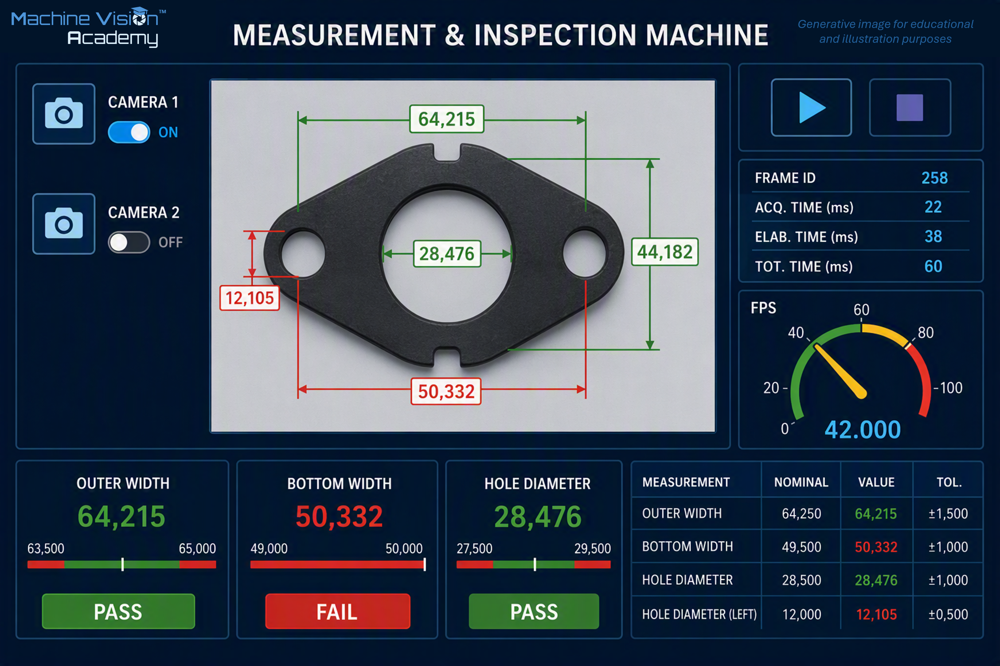
2.3.2 Defect inspection
Defect inspection is the family most commonly associated with machine vision on a factory floor. Typical tasks include completeness (e.g. presence of components), correctness (e.g. position and orientation, material or variant verification) and cosmetic defect inspection (e.g. surface condition and texture, colour, presence of foreign material). What ties these tasks together is a decision on which the process must act within the available cycle time, for example by rejecting the part or intervening to correct the fault.
Most tasks in this family are attribute checks, although an attribute inspection can contain variable sub-steps. A colour check, for example, may calculate a histogram or colour-distance value on a continuous scale and then convert that value into a categorical decision. The family describes the decision delivered by the inspection, not every mathematical operation used internally.
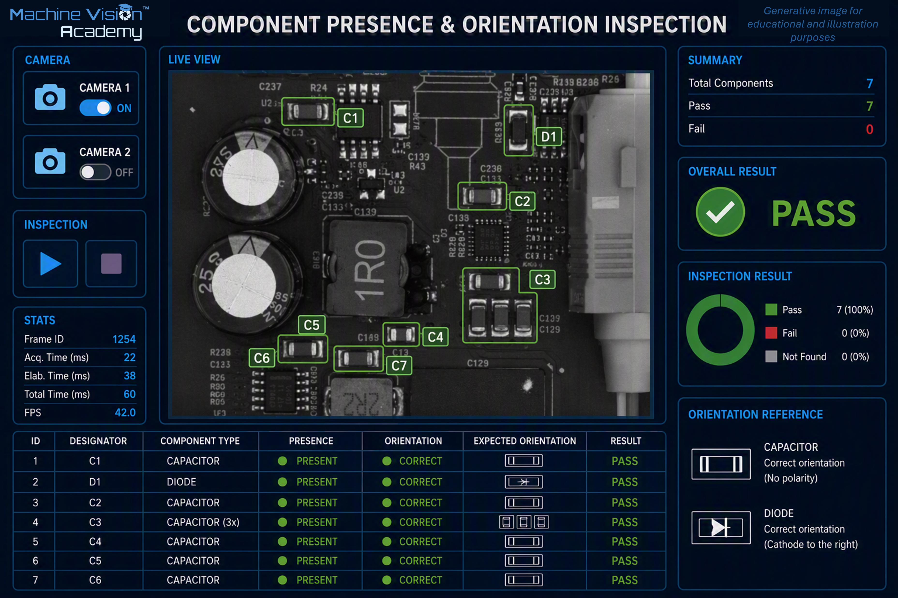
The traditional approach to implementing these inspections is to translate the acceptance criterion into explicitly engineered image features and decision logic. Typical rule-based tools include thresholding and connected-component analysis, template and geometric pattern matching, edge and contour analysis, and classical texture or colour measures. These methods are particularly effective when the characteristics that distinguish acceptable from defective parts can be expressed consistently through a manageable set of measurable image features. They are deterministic, generally require relatively few examples during development, and make the relationship between the observed feature and the resulting decision explicit. Their limitations become apparent when acceptable product appearance and defect variation are too complex to describe reliably through hand-crafted features and thresholds.
Deep Learning approaches provide an alternative when that visual variation is difficult to describe explicitly. Depending on the inspection task, these include image classification, object detection, semantic or instance segmentation and anomaly detection. Their flexibility, however, shifts a significant part of the engineering problem from feature design to data: representative examples must be collected, labelled and shown to cover the relevant production variation. This can be particularly difficult in manufacturing because genuine defects are often rare, resulting in small and highly imbalanced datasets. Published work on sterile-barrier seal inspection illustrates this problem and the resulting need to evaluate model behaviour carefully under such conditions [101], [102]. Scarcity of defective samples and class imbalance increase the risk of overfitting and make validation particularly demanding, especially in regulated industries. Rule-based and learned approaches are developed in detail later in the handbook; here they should be regarded as complementary strategies whose suitability depends on the inspection requirement and the available evidence.
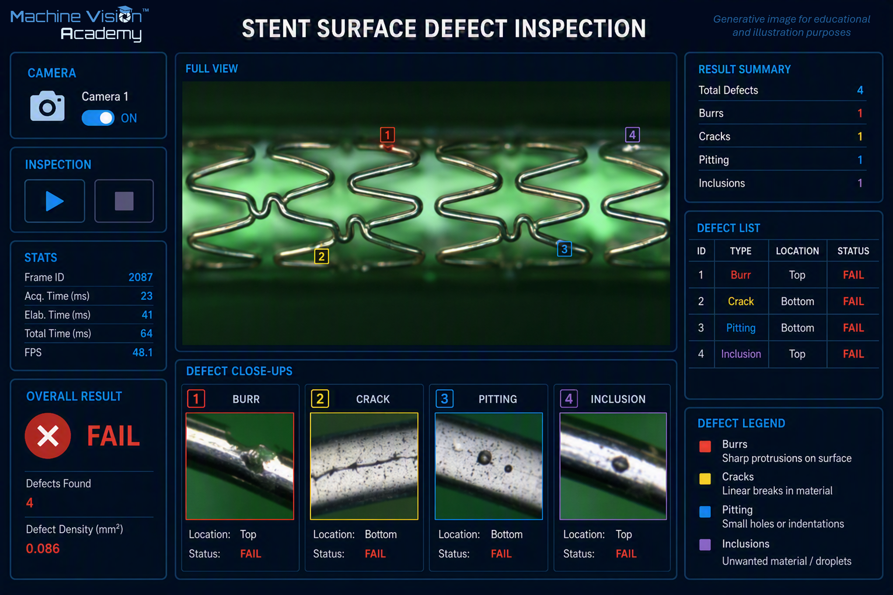
2.3.3 Identification of unique parts: codes, characters and traceability
Identification answers the question: which item is this, and can its history be traced? It reads machine-readable and human-readable marks—one- and two-dimensional codes, printed text and direct-part marks—and associates each item with a record. In regulated industries this capability supports traceability, authentication and recall processes. Medical-device Unique Device Identification and pharmaceutical serialisation are examples of regulatory contexts in which machine-readable identifiers and verification are important [103], [104]. Industry accounts also emphasise the value of integrating code reading and logging directly into automated production [105].
Data Matrix, standardised by ISO/IEC 16022, is widely used where a compact two-dimensional identifier is required. Direct-part marking by laser, dot-peen, inkjet or other methods can provide a persistent identifier without a separate label. Reading low-contrast marks on curved, reflective, damaged or contaminated surfaces can require full machine-vision techniques rather than a simple idealised barcode-reading scenario [104].
A related pair of tasks is optical character recognition (OCR) and optical character verification (OCV). OCR determines text whose content is not known in advance, whereas OCV checks that an expected string has been produced correctly and legibly [106]. A traceability station can combine these functions: verify printed text, decode a machine-readable identifier, compare the two and reject a mismatch.
The practical difficulty of identification is therefore robustness and speed. Industrial marks may suffer from low contrast, glare, curvature, print variation or direct-marking distortion. Code quality can itself be graded so that the process controls not merely whether a symbol is readable at the current station, but whether its quality is sufficient for downstream use.
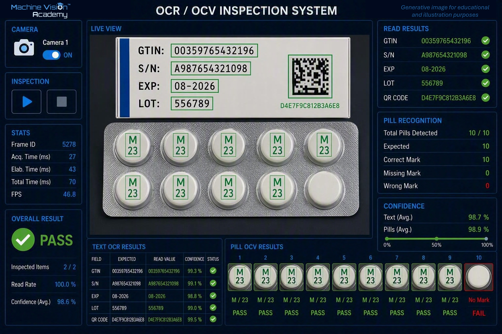
2.3.4 Guidance and robot vision
A conventionally taught robot repeats positions defined relative to its coordinate system. If the workpiece is not presented at the expected pose, the operation can fail. Vision guidance reduces that dependence on precise fixturing by locating a feature or object in two or three dimensions and providing pose information that the robot or motion system can use. The industrial value is flexibility: components can tolerate greater variation in presentation, which can reduce dedicated fixturing and support higher product mix.
Two-dimensional guidance estimates position and in-plane rotation when the relevant geometry can be represented on a plane, for example locating a component on a conveyor or determining an offset for placement. Three-dimensional guidance adds depth and full spatial pose. A representative application is bin picking, in which the system identifies candidate parts in a container, estimates their poses and supports selection of a feasible pick [107].
The difficult engineering problems extend beyond recognition. Reflective, dark or transparent surfaces can challenge depth acquisition; parts may overlap and occlude one another; the complete perception-and-motion sequence must meet cycle time; and the camera coordinate system must be related accurately to the robot coordinate system. Hand-eye calibration is therefore fundamental. Relevant methods include two-dimensional pattern location and pose estimation, three-dimensional acquisition using structured light, time-of-flight or stereo, point-cloud registration, and learned grasp-point selection where object variation makes explicit modelling difficult.
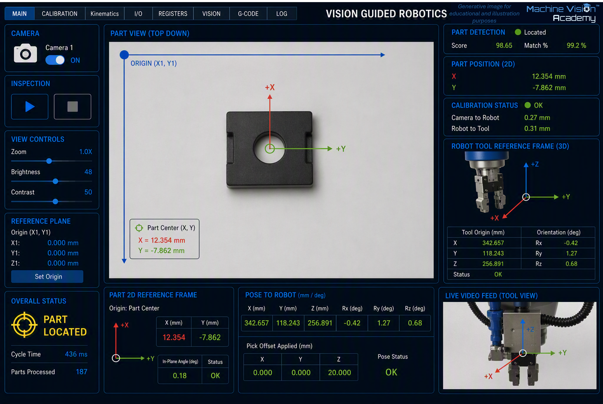
2.4 System architectures
Having looked at what vision systems are asked to do, the next question is where the image-to-decision process should live. This is partly a development question - which tools, skills and computing resources are needed to engineer the solution - but it is primarily a deployment question. Production architecture must satisfy cycle time, physical space, integration, reliability, cybersecurity and long-term maintainability while supporting the availability, performance and quality targets that ultimately contribute to OEE.
Whatever the hardware arrangement, the logical chain remains familiar: part presentation -> lighting -> optics -> sensor/image acquisition -> image processing -> decision -> process action, as illustrated in Figure 2.1 and discussed in later chapters. Architectures differ less in what the vision system is trying to achieve than in where processing occurs, how the processing is packaged, what other systems it depends upon and how widely failures can propagate.
A useful way to visualise deployment is as a spectrum extending outwards from the camera. Device Edge Computing keeps acquisition and processing inside the imaging device. Machine Edge Computing separates the camera from a controller, industrial PC or specialised AI computer located at or beside the machine. On-Premises Vision Server centralises processing within the organisation, usually so that compute, storage or software services can be shared. Cloud Inference moves the production inference itself to remotely hosted infrastructure. GPUs, NPUs and other accelerators are not separate positions on this spectrum; they are computational choices that can appear at several of these levels.
Hybrid architectures cut across this spectrum in two ways. Production functions can be divided between locations - for example, local inference with central storage and monitoring - and development can be separated from deployment, such as training a model in the cloud and deploying it later to a smart camera or industrial PC. The sections that follow therefore work from the camera outwards, before comparing the principal trade-offs and offering practical selection guidance.
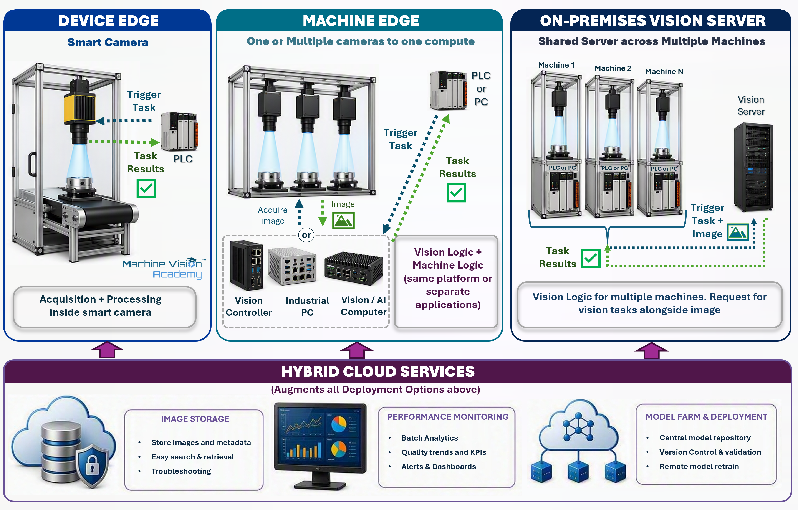
2.4.1 Device Edge Computing
Device Edge Computing places image acquisition, processing and decision-making within the imaging device itself. In machine vision this is represented mainly by the smart camera, smart vision sensor or smart 3D sensor: a compact industrial device containing the sensor, processor, memory, vision runtime and communications interfaces, often with digital I/O capable of interacting directly with the machine. The inspection loop can therefore be remarkably short: trigger, acquire, process, decide and communicate - or even switch an output - without an external vision computer in the production path [108], [109].
A non-exhaustive selection of 2D smart-camera families includes Cognex In-Sight, KEYENCE VS Series, Zebra VS and Iris GTX, OMRON FHV7 and MicroHAWK F-Series, SICK InspectorP6xx, Teledyne DALSA BOA/BOA Pro, Balluff BVS SC, Banner Engineering VE Series and wenglor B60 uniVision [79], [110], [111], [112], [113], [114]. Device Edge also includes specialised 3D smart sensors, such as LMI Technologies Gocator laser profilers (laser triangulation) and snapshot sensors (structured-light 3D) [115], and Micro-Epsilon scanCONTROL SMART laser-line profilers [116], where acquisition and at least part of the measurement or inspection processing execute within the sensor
Edge computing is not new to industry. Machine vision applications have used processing close to the process for decades. What has changed is how much capability can now be packaged into the device. An example that illustrates this evolution is the DataMan smart sensors, the first product released by Cognex in 1982, soon after the company was founded. This was the predecessor of the In-sight smart camera and it had one only function, OCR. Contemporary smart cameras combine traditional operations - thresholding, blob analysis, pattern matching, metrology and identification - with increasingly capable deep learning tools.
The advantages follow directly from this integration. With no external computer in the normal inference path, communications latency and network dependencies are reduced, timing can be coupled closely to the machine, and production can continue independently of remote IT or Internet services. Installation is simple and compact: for a suitable application the vision system may require little more than power, triggering, machine communications and the optical arrangement. A3 similarly characterises smart cameras as self-contained systems particularly well suited to distributed, independent inspection points [109].
Smart cameras are also frequently designed around configuration or no-code/low-code environments rather than conventional software programming. This can shorten development for established inspection tasks and makes useful vision functions accessible to a range of engineers who are not software specialists. No-code does not necessarily mean that programming is unavailable: many platforms expose expressions or limited scripting, while products such as Zebra Iris GTX, SICK InspectorP6xx and wenglor B60 provide more extensive customisation routes [111], [113].
Making a vision application easy to configure does not make machine vision itself easy. No-code environments can produce convincing results very quickly, but they can also hide the assumptions behind optics, image formation, algorithms and validation. From a practitioner perspective, this accessibility is valuable when it reduces implementation effort for a well-understood task; it becomes risky when ease of configuration is mistaken for a substitute for vision knowledge. A robust architecture should be selected because it fits the application, not simply because it is the only environment the developer already knows.
The limitations are largely the consequence of the same integration. Processing power, memory, storage, thermal dissipation, sensor choice and expansion capability are bounded by the camera platform. Scaling often means adding or replacing devices rather than expanding a shared computational resource, and tightly coordinated multi-camera applications can become expensive or awkward. Hardware and software are also commonly tied to one vendor ecosystem. There are notable exceptions: freely programmable platforms such as the Baumer AX series and Vision Components VC Z series retain the Device Edge location while exposing Linux-based development and third-party libraries. Baumer supplies an Ubuntu/Jetson software stack and SDKs, while Vision Components supports embedded Linux and HALCON deployment [117], [118]. These products trade some appliance simplicity for much greater algorithmic freedom.
Device Edge is therefore most attractive when the complete inspection can be contained comfortably within one or a few largely independent devices. The familiar description of a smart camera as a complete vision system in a compact package remains useful; the engineering judgement is to make sure that the application - including plausible future growth - remains inside the performance and software envelope of that package.
Short and predictable image-to-decision path - acquisition, processing and decision remain within the device; particularly valuable where the interval between image capture and machine action is very short.
High production autonomy - little or no dependence on external PCs, servers or IT infrastructure during normal operation.
Simple and compact architecture - fewer components, interfaces and software dependencies to install, diagnose and maintain.
Rapid development for established tasks - integrated no-code/low-code environments can substantially reduce implementation effort.
Good failure isolation - a device failure normally affects one inspection point rather than a whole group of machines
Straightforward lifecycle support - hardware, runtime and configuration can often be managed and replaced as one vendor-supported device
Best fit: Self-contained applications using one or a small number of independent cameras, where the processing fits comfortably within the device and priorities include low latency, local autonomy, compact installation and straightforward maintenance. Typical examples include presence/completeness checks, code reading, straightforward gauging, localised defect inspection and simple robot guidance.
- Finite computational envelope - processing performance, memory, storage and thermal capacity are bounded by the selected device.
- Limited scalability - increasing processing capacity commonly means adding or replacing devices; this matters where an initially simple application is expected to grow substantially.
- Multi-camera coordination can become cumbersome - especially when several views must be synchronised or processed jointly
- Vendor dependence is usually higher - conventional smart cameras couple sensor, processor, runtime and development environment, although open programmable platforms provide exceptions
- No-code can constrain complex applications - bespoke algorithms, complex sequencing and data handling can become difficult to implement and maintain.
- Ease of configuration can conceal engineering difficulty - no-code reduces implementation effort, not the need to understand lighting, optics, variation and validation.
Rule of thumb:
Choose Device Edge because the application benefits from being self-contained, not simply because a smart camera is the easiest architecture to programme. If scope or complexity is likely to grow, consider the future software and performance requirements before committing to a tightly integrated platform.
2.4.2 Machine Edge Computing
Machine Edge Computing separates image acquisition from the principal processing hardware while keeping that processing within, beside or directly associated with the production machine. Cameras acquire the images, but the inspection executes on a separate local platform. Compared with Device Edge, this introduces additional components and interfaces; in return it provides much greater freedom in computational resources, camera selection, software architecture and machine integration while retaining most of the latency, availability and data-locality benefits of local processing [108].
Three useful variations can be distinguished within this architecture.
The first is the dedicated vision controller. Cameras connect to a purpose-built controller supplied as part of an integrated vision ecosystem. Current examples include the KEYENCE CV-X, OMRON FH, Cognex In-Sight 6900 and Zebra 4Sight controller families [119], [120], [121], [122]. These products retain much of the appliance-like character of a smart camera - coordinated cameras, I/O, industrial communications and graphical vision software - while supporting more cameras, greater processing capacity or broader acquisition options. Dedicated controllers are often a useful middle ground between an all-in-one camera and a fully bespoke IPC.
The second variation is the PC-based vision system, in which one or more industrial cameras connect to a general-purpose industrial PC or workstation. This is usually the most flexible Machine Edge form because the camera technology, acquisition interface, processor, GPU and software environment can be selected relatively independently.
A non-exhaustive selection of commercial PC-based machine-vision software includes Cognex VisionPro; Zebra Aurora Design Assistant and Aurora Imaging Library; MVTec HALCON and MERLIC; NI LabVIEW with the Vision Development Module; and Teledyne DALSA Sherlock. These range from graphical/no-code environments to complete programmable libraries, but all support PC-based Machine Edge deployment [123], [124], [125], [126]. Some environments can also target Device Edge or embedded hardware, which can delay part of the deployment decision while the application is being developed. Zebra Aurora Design Assistant can deploy to Iris GTX smart cameras; MVTec supports HALCON/MERLIC on selected embedded platforms; and Teledyne DALSA has offered Sherlock on BOA smart-camera systems [111], [114], [123], [124]. This portability is product-specific: Cognex VisionPro applications, for example, are not simply deployed as In-Sight jobs. A less common variation is NI LabVIEW with the Vision Development Module, where supported applications can target PCs and real-time controllers and a subset of image-processing functions can execute on FPGA hardware [125]. Open-source alternatives include OpenCV for classical image processing and computer vision, and TensorFlow and PyTorch for learned vision.
The use of deep learning can itself influence architecture selection when model size, memory, acceleration or lifecycle requirements exceed the practical envelope of a smart camera. Once a sufficiently capable Machine Edge platform has been selected, however, classical and learned vision do not normally need separate computing engines. The same IPC can combine calibrated metrology, conventional pattern matching, 3D processing and GPU-accelerated neural-network inference, allowing each part of the inspection to use the method best suited to it.
The third variation uses a specialised vision or AI computer. Compact platforms based on NVIDIA Jetson and similar accelerators combine CPU and GPU/NPU computing in hardware designed for edge deployment. Architecturally this remains Machine Edge: a Jetson running TensorRT and an x86 IPC containing a discrete GPU occupy the same deployment location. They differ in processor architecture, power and cooling, expansion, serviceability and software ecosystem rather than in where the production decision is made.
Machine Edge consequently offers a particularly broad range of engineering choices. Processing can range from a modest fanless controller to a high-performance multicore computer with discrete GPUs. Cameras, optics and lighting can usually be selected independently, using standard interfaces such as GigE Vision and USB3 Vision or dedicated acquisition hardware for CoaXPress and Camera Link HS. This flexibility is well suited to multi-camera systems, high-resolution imaging, computationally demanding 3D or deep-learning applications and projects requiring close integration with PLCs, robots, databases and other software.
Development flexibility is similarly broad. At one end are graphical and no-code environments; at the other are libraries and application frameworks supporting C++, C#, .NET, Python and other languages. This becomes especially valuable when vision is only one part of a larger machine application. A semi-automated process might ask an operator to select a region on an HMI, acquire an image, review an intermediate result, move a mechanism and then continue the vision sequence. Smart-camera logic can implement some of these interactions, but a PC-based architecture generally provides much greater freedom when vision, operator interaction, machine sequencing and data management must behave as one coordinated application.
The price of that freedom is greater system responsibility. The designer may need to manage operating systems, drivers, camera interfaces, GPU runtimes, application software, cybersecurity and updates, and must keep the complete combination supportable throughout the machine lifetime. More components create more interfaces and potential failure points than an appliance-style smart camera, although they also allow cameras, frame grabbers, computers and accelerators to be replaced or upgraded independently. Development effort can therefore range from a short controller configuration exercise to a substantial software-engineering project.
For demanding manufacturing applications this trade-off is often worthwhile. Machine Edge preserves local production autonomy while providing considerably greater computational, software and integration flexibility than Device Edge. In practice it becomes the natural architecture when vision is no longer an isolated inspection but part of a more complex machine-level application.
High computational flexibility - processing can range from a dedicated controller or fanless IPC to multicore CPUs, GPUs and specialised AI accelerators
Deep machine-software integration - vision can form part of a wider application incorporating machine sequencing, operator interaction, robotics, databases and other functions.
Broad hardware choice - cameras, sensors, acquisition interfaces and processing hardware can usually be selected independently.
Excellent multi-camera capability - several cameras can share processing resources and their acquisitions can be synchronised or analysed jointly.
Local production autonomy - time-critical inference remains at the machine without depending on remote servers or cloud connectivity.
Expandable architecture - memory, storage, processing hardware and accelerators can often be upgraded without replacing the complete imaging system.
Best fit: Applications requiring multiple coordinated cameras, substantial integration with the wider machine application, or processing beyond the practical envelope of Device Edge. Typical examples include multi-view assembly inspection, high-resolution inspection, 3D bin picking, advanced metrology, demanding deep-learning inference and semi-automated workflows combining vision with operator interaction.
Greater integration responsibility - operating systems, drivers, acquisition hardware, GPU runtimes, application software and industrial communications may all become part of the design.
Larger software lifecycle - cybersecurity, updates and dependency compatibility become part of maintaining the production machine.
Slower initial deployment - additional hardware and software elements must be selected, integrated, commissioned and supported.
Complexity can grow quickly - an open software environment enables sophisticated applications but can also produce software that is difficult to validate and maintain if architecture is not controlled.
A larger failure domain - where one computer serves several cameras or inspection functions, loss of that computer may disable the complete machine-vision application.
Rule of thumb:
Choose Machine Edge when the application is already moderately or highly complex, future requirements are uncertain, or significant growth is expected. It is particularly appropriate for multi-camera coordination, demanding 3D or deep-learning processing, or close integration of vision with the machine software and operator workflow.
2.4.3 On-Premises Vision Server
An On-Premises Vision Server moves the principal processing away from the individual machine while retaining it within the factory or organisational computing infrastructure. Cameras or local acquisition systems transmit images to a server, workstation or compute cluster that provides processing services to one or more machines, cells or lines.
This architecture should not be defined simply by the physical size of the computer. The useful distinction is centralisation and service scope. A large GPU workstation dedicated to one inspection machine is still Machine Edge even if it sits outside the machine cabinet. An on-premises server, by contrast, is normally managed as shared infrastructure and provides compute, storage, model serving or other software services to multiple production processes.
A common reason to centralise is simply that the required compute no longer belongs comfortably on the factory floor. Large deep-learning or 3D workloads may need high-power GPUs, substantial memory and storage, and cooling arrangements that are awkward to package beside a machine. In dusty, hot, wet or space-constrained production areas, accommodating such hardware can require a large protected or cooled enclosure. If the process can tolerate a networked inference path, moving this hardware into a clean, controlled server room can be more practical than forcing data-centre-class compute into the machine.
The second attraction is resource sharing. Several machines may call different models on the same GPU infrastructure or use multiple instances of a common model. NVIDIA Triton Inference Server is designed for this model-serving pattern, supporting model repositories and concurrent model instances across CPU and GPU resources [127]. Pooling can improve utilisation and lets compute capacity be expanded independently of each production asset rather than sizing every station for its own peak requirement.
Centralisation also makes lifecycle management and monitoring easier. Model versions, software libraries, images, inspection results, logs and performance metrics can be managed from common infrastructure. This is useful even where no regulatory requirement applies, and it becomes more important where AI governance is formalised. Under the EU AI Act, providers of high-risk AI systems must establish post-market monitoring that systematically collects and analyses performance information throughout the system lifetime [128]. Centralised inference is not required to meet that obligation - edge systems can report telemetry to separate monitoring services - but server architectures naturally support enterprise monitoring, audit trails, version control and controlled deployment of model updates.
The trade-off is that the production network becomes part of the inspection path. Images must reach the server and results return within the available decision time. High-resolution or high-frame-rate systems can generate considerable network traffic, and latency is now influenced by transport, switching, queuing and shared server load as well as image acquisition and inference. Where very short or tightly bounded response is required, keeping the time-critical decision at Device or Machine Edge may remain preferable even if storage, monitoring or model management is centralised.
Centralisation also enlarges the failure domain. Failure of a Machine Edge computer normally affects one machine; failure of a shared server or network component may affect every station that depends on it. As more production relies on shared infrastructure, redundant networking, compute, storage and failover become progressively more valuable. Troubleshooting likewise crosses the OT/IT boundary and can require expertise in vision, networking, servers, cybersecurity and production automation.
Security and data sovereignty remain easier to control than with remote cloud inference because images, models and production data can stay inside the organisation. The architecture is therefore most compelling when compute is impractical to house at the machine, resources can be shared effectively, or centralised model management and monitoring provide enough value to justify the network dependency.
High-performance compute away from the machine - large GPUs, memory and storage can be installed where power, cooling and physical access are easier to engineer
Better suited to harsh production environments - sensitive high-power computing can remain in a clean, controlled room rather than a large protected machine cabinet.
Shared computational resources - expensive CPU/GPU capacity can serve several machines rather than being duplicated at every station.
High computational scalability - server hardware and accelerator capacity can be expanded independently of individual machines.
Centralised software, model and monitoring services - repositories, versions, logs, metrics and image archives can be consolidated.
Strong data locality compared with cloud deployment - production images, intellectual property and models remain within organisational infrastructure.
Best fit: Applications requiring compute that is impractical to install at the machine, or where several machines can benefit from shared GPU resources, central model services, large image repositories or enterprise-level monitoring. It is particularly attractive for demanding deep-learning workloads where local-network latency is acceptable.
- The production network enters the inspection loop - bandwidth, latency, congestion and network availability can directly affect inspection performance.
- Timing becomes less predictable - response includes image transmission, server queuing, workload contention and result communication as well as inference.
- The failure domain becomes larger - a server, switch or network failure can affect multiple machines or production lines.
- Redundancy may become necessary - production-critical shared infrastructure may require redundant networking, compute, storage and failover.
- Raw imaging can consume enormous bandwidth - central processing may be inefficient if many stations continuously transmit large image streams.
- OT and IT responsibilities converge - commissioning and support can require machine-vision, network, server and cybersecurity expertise.
- Resource sharing requires capacity engineering - efficient average utilisation does not guarantee acceptable response during simultaneous peaks.
Rule of thumb:
Choose an On-Premises Vision Server when compute requirements, physical/environmental constraints, resource sharing or centralised monitoring justify moving processing away from the machine, and the application can tolerate the resulting local-network dependency. As centralisation grows, redundancy and capacity planning should grow with it.
2.4.4 Cloud Inference
Cloud Inference places the production vision processing outside the local manufacturing infrastructure. Images or other vision data are transmitted over a wide-area network to a remotely hosted service, where the model or application executes and returns a prediction or decision. This must be distinguished from cloud-based development, model management or monitoring, all of which can use cloud infrastructure while production inference remains at Device Edge, Machine Edge or on an On-Premises Vision Server.
There is no shortage of technically capable hosted inference services. Amazon SageMaker AI provides managed real-time endpoints with monitoring and automatic scaling [129]; Microsoft Azure Machine Learning offers managed online endpoints and customer-managed Kubernetes endpoints [130]; Google Vertex AI provides online prediction endpoints for deployed models [131]; and LandingAI’s LandingLens offers hosted inference as well as Docker and industrial-edge deployment routes [132]. LandingAI was founded by Andrew Ng in 2017, which helped make its data-centric vision workflow particularly visible within industrial AI [133].
The important point is that these services solve a somewhat different scaling problem from a typical production machine. A web or enterprise service may receive one request now and thousands a few seconds later, so elasticity and request concurrency are central design requirements. AWS explicitly positions serverless inference for intermittent or unpredictable traffic [134], while LandingLens describes its hosted option as appropriate for variable inference loads and labels the cloud route as higher latency than its local Docker and LandingEdge options [132]. A manufacturing station is usually the opposite: the number of cameras, approximate image rate and peak workload are known, but a result may be required repeatedly within a defined process window. For that workload, predictability can matter more than elasticity.
This difference explains why Cloud Inference remains unusual for tightly coupled factory-floor inspection. Wide-area network latency and variability, service queues, external connectivity and service availability become part of the inspection loop. A cloud provider can legitimately describe an endpoint as real-time because it answers synchronous low-latency API requests; that does not imply the deterministic timing normally expected of a production control path. Continuous transfer of high-resolution images can also create significant bandwidth costs and extends the cybersecurity and data-governance boundary to production imagery that may reveal product or process intellectual property.
None of this makes cloud inference impossible. It can be sensible where timing is relaxed, request volume is intermittent or highly variable, the image payload is modest, or a remote service provides a capability that would be uneconomic to maintain locally. The practical warning is simply not to confuse technical possibility with architectural fit. A cloud endpoint designed to serve a changing population of users is solving a different optimisation problem from a camera inspecting the same product every 300 ms for ten years.
In industrial vision, cloud platforms are often more compelling in hybrid architectures. AWS documents manufacturing patterns in which SageMaker is used to build and train models in the cloud while AWS IoT Greengrass performs inference locally for latency-sensitive inspection [135], [136]. LandingLens similarly separates hosted inference from self-hosted Docker and LandingEdge, the latter connecting directly to industrial cameras and PLCs [132]. Cognex OneVision provides another contemporary example: AI models are developed, managed and governed using cloud services while runtime inspection executes on supported In-Sight systems at the edge [137]. In these arrangements, loss of cloud connectivity may affect monitoring, synchronisation or model distribution without necessarily stopping the immediate production decision.
It is also useful to distinguish development platforms from serving platforms. Tools such as Voxel51 FiftyOne are valuable for dataset curation, applying models to datasets and model evaluation, but are better viewed here as development/evaluation infrastructure rather than as a managed factory-floor inference endpoint [138]. Likewise, a product carrying a cloud label may use cloud licensing, collaboration or training while its runtime remains local. The architecture should therefore always be classified by the location of the production decision, not by the marketing label attached to the development environment.
Cloud development can be especially attractive for learned vision because training and experimentation often need substantial GPU resources only intermittently, whereas production inference may need smaller, predictable resources continuously. The development and deployment architectures therefore do not need to match: datasets can be annotated and models trained centrally, then the validated model can be deployed to an IPC, embedded AI computer, supported smart camera or on-premises server. This separation preserves local production autonomy while still exploiting shared development infrastructure.
Cloud Inference - technically capable, but still unusual for tightly coupled factory-floor control. Hosted endpoints are attractive for elastic or variable request loads, but WAN dependency, timing variability, image bandwidth and governance make them a poor default for deterministic production inspection.
Hybrid Deployment - local inference with cloud services. The time-critical decision remains at Device/Machine Edge or on-premises, while cloud services provide storage, monitoring, dataset/model management, collaboration and fleet-level visibility.
Cloud Development - develop centrally, deploy locally. Annotation, training and experimentation can use scalable cloud resources while the resulting model is deployed to the production architecture that best meets the machine requirements.
A cloud-based machine-vision platform does not imply that production inference should execute in the cloud. First decide where the image-to-decision path needs to run; then decide which development and supporting functions benefit from cloud infrastructure.
2.4.5 Comparison and selection criteria
When selecting an architecture, a useful starting question is: where should the production image-to-decision process actually run? Once that is understood, development tools can be selected to support the deployment rather than allowing familiarity with a particular software package to decide the architecture by accident. It is a common project trap: a convenient prototype becomes the production platform before anyone has asked whether it is the best place for the system to live.
There is rarely one objectively correct answer. This section focuses on technical criteria that can be compared reasonably generally - timing, processing requirements, camera topology, integration, reliability, maintainability and growth. Real projects are also shaped by criteria that are organisation- and site-specific: approved vendors, internal skills, procurement, spare-parts strategy, legacy systems, cybersecurity rules, support agreements and corporate standardisation. Those constraints can be every bit as decisive as benchmark performance.
The comparisons below are intended to support an engineering decision, not prescribe one. Similar applications can reasonably use different architectures because the surrounding organisation, site and lifecycle constraints differ. Technology also moves quickly; the useful objective is not to select the architecture that looks most advanced, but the one whose limitations are easiest to live with for the intended production life.
The following table summarises the main technical characteristics of the three architectures normally considered for on-site production inference. Cloud Inference is omitted from the table because it remains an exception rather than the default for tightly coupled factory-floor decisions; where it is genuinely appropriate, its WAN, service and governance constraints should be assessed explicitly rather than treated as another local compute option.
🟢 favourable · 🟡 neutral · 🔴 unfavorable
| Selection criterion | Device Edge | Machine Edge | On-Premises Vision Server |
|---|---|---|---|
| Image-to-decision latency | 🟢 Very low | 🟡 Low | 🔴 Network-dependent |
| Timing predictability | 🟢 Very high | 🟡 High | 🔴 Depends on network and shared workload |
| Processing capacity | 🔴 Device-bounded | 🟢 High to very high | 🟢 Very high |
| Compute scalability | 🔴 Limited; add/replace devices | 🟡 Good; upgrade local hardware | 🟢 Very good; expand shared resources |
| Complex application logic | 🔴 Limited to platform | 🟢 Good to very high | 🟢 Good for services; less suited to tight HMI sequencing |
| Camera flexibility | 🔴 Integrated/supported sensors | 🟢 High | 🟢 High, subject to acquisition architecture |
| Multi-camera coordination | 🔴 Limited | 🟢 Very good | 🟡 Good where networked acquisition is practical |
| Hardware / accelerator flexibility | 🔴 Low | 🟡 High | 🟢 Very high |
| Software / custom-code flexibility | 🔴 Low to medium | 🟢 High to very high | 🟢 High |
| Machine-controller integration | 🟢 Very direct | 🟡 Very good | 🔴 Indirect / networked |
| Physical footprint at machine | 🟢 Very small | 🔴 Moderate | 🟡 Small locally; infrastructure elsewhere |
| Production autonomy | 🟢 Very high | 🟢 Very high | 🔴 Depends on local network/server infrastructure |
| Network dependency for inference | 🟢 None or minimal | 🟢 None or minimal | 🔴 Local production network |
| Failure isolation | 🟢 Usually one inspection point | 🟡 Usually one machine/cell | 🔴 Shared infrastructure can affect several machines |
| Data locality | 🟢 Very high | 🟢 Very high | 🟡 Within organisational infrastructure |
| Implementation complexity | 🟢 Low | 🟡 Moderate to high | 🔴 High |
| Software / infrastructure lifecycle burden | 🟢 Low; appliance-like | 🟡 Moderate to high | 🔴 High; combined IT/OT infrastructure |
| Expansion / future growth | 🔴 Limited | 🟡 Good | 🟢 Very good |
| Centralised resource sharing | 🔴 None | 🟡 Limited | 🟢 Very good |
| Enterprise monitoring / model governance | 🔴 Limited unless hybrid | 🟡 Good with added services | 🟢 Very good |
Table 1.2 - Inference architecture selection summary. Qualitative ratings are comparative guidance rather than absolute performance guarantees.
The table is useful for comparison, but architecture selection often becomes clearer when approached from the opposite direction: what characteristics of the application should make a particular architecture attractive?
- The task is bounded and relatively simple. The complete inspection sits comfortably inside the device software and compute envelope.
- A very short and predictable image-to-action path matters. Acquisition, processing and potentially digital I/O can remain within one device.
- Only one or a few largely independent cameras are required. Each inspection point can operate autonomously.
- Compactness and simplicity are priorities. Reducing computers, operating systems and interfaces has real lifecycle value.
Think twice when: the application could grow substantially, requires bespoke software or tight multi-camera coordination, or coding sequences and tools start becoming complex and hard to troubleshoot.
- The vision application is complex. The project benefits from independently selecting camera, acquisition, compute and software.
- Requirements are uncertain or likely to grow. An IPC/controller preserves significantly more processing, memory, storage and software headroom.
- Several cameras must act as one system. Multi-view inspection and synchronised acquisition are easier to coordinate centrally at the machine.
- Processing is demanding. High-resolution imaging, 3D, deep learning or mixed classical/learned pipelines justify CPUs, GPUs or other accelerators.
- Vision must integrate deeply with the wider machine software. Robotics, databases, HMI interaction and machine sequencing can be coordinated within one application.
Practical warning sign: poorly defined or evolving inspection requirements. Where substantial uncertainty remains, PC-based development - or a software environment that can later target an embedded device - can preserve options while the real requirements become clearer.
- The required compute is awkward to install at the machine. Large GPUs, power and cooling are easier to manage in controlled infrastructure.
- Several machines can share expensive resources. Central CPUs, GPUs, memory or storage can serve more than one inspection station.
- Central model or software services provide value. Common models, libraries and versions are easier to manage centrally.
- Monitoring, storage and governance are important. Images, results, logs and model performance can be consolidated across machines.
- The inspection can tolerate a networked processing path. Network and server response can be kept within the process timing envelope.
Main question: do the benefits of centralisation justify enlarging the failure domain? As more machines depend on the same infrastructure, capacity planning, redundancy and failover become correspondingly more important.
The architecture selected for production does not have to dictate the rest of the vision lifecycle. Local inference can be combined with cloud development, model management, monitoring, image storage and cross-site services. These hybrid arrangements are best considered after the production inference path has been placed, rather than treated as another competing location for the time-critical decision.
A practical closing principle is to favour the simplest architecture that satisfies the production requirements with adequate margin and an acceptable lifecycle burden. Simplicity does not mean choosing the device that is easiest to configure in a demonstration. It means avoiding compute, software, infrastructure and dependencies that production does not need, while retaining enough headroom for the system to remain maintainable as requirements and technology evolve.
2.5 The vision system as an engineered chain
Previous sections considered what machine-vision systems are asked to do and where their processing can be deployed. This section turns to how the pieces fit together. Whatever the application family or architecture, a working vision system is an engineered chain: each stage creates the conditions required by the next, and weaknesses introduced early in the chain are difficult to recover later. The discussion begins with the stages themselves, then considers the order in which they should be engineered, shows how a requirement propagates through the complete system, and closes with the professional roles, standards and credentials that support the discipline.
2.5.1 The seven stages: presentation, illumination, optics, sensor, processing, decision and action
Machine-vision texts commonly describe a path from image acquisition through image processing to a decision, while industry guidance similarly treats lighting, optics, sensors, processing and communications as interdependent elements of a complete system [95], [139]. For the purposes of this handbook, it is useful to make that chain slightly wider. The five stages that form the core imaging chain - illumination, optics, sensor, processing and decision - are bracketed by two application stages: presentation before the image is acquired, and action after the decision has been made. This gives seven stages in total. The distinction is deliberate: a technically excellent image-processing algorithm is of little value if the part is not presented in a usable way, or if the final result never produces the required machine response.
The five core stages can be stated briefly because each is developed later in the handbook. Illumination controls how the relevant features appear. Optics form and scale the image on the sensor. The sensor converts the optical signal into sampled image data. Processing transforms those pixels into measurements, features, locations or learned outputs. The decision stage then interprets those outputs against the application requirement: for example pass/fail, a dimensional result, a class, a pose or a confidence value. These are the stages most often associated directly with machine vision, but they do not by themselves make a complete automated application.
The first application bracket is presentation. For inspection and measurement, repeatable presentation is usually an advantage: the feature should remain within the usable field of view, focus range and lighting geometry, and acquisition should occur at a controlled point in the process. Guides, nests, rails, fixtures, controlled motion and robot poses are therefore not merely mechanical details; they directly determine how much variation the vision system must tolerate [140]. Triggering and illumination synchronisation form part of the same problem. At production speed, even small timing errors translate into positional variation, which is why industrial cameras commonly provide dedicated trigger and illumination-control interfaces for deterministic acquisition [141].
Presentation also determines how many views of the part must be acquired and how those views are created. If the complete inspection can be performed from one viewpoint, the decision is simple. Where features lie on different faces, at substantially different heights, or around the circumference of a component, the engineer must instead decide whether to move the part, move the camera, or use multiple cameras. This choice should be made early because it shifts complexity between the mechanical system and the vision system and can influence camera count, calibration, processing architecture and cycle time.
A useful order of preference is to start with the resources already present in the machine. If a robot or positioning mechanism already handles the component, presenting several faces to a fixed camera may add relatively little hardware and can be an economical solution. Where only a small displacement is required—perhaps between two nearby inspection planes—a simple linear or pneumatic movement of either the part or camera may also be practical. As the required motion becomes larger or more complex, however, several fixed cameras often become more attractive, particularly when cycle time does not allow sequential movement and acquisition. Multiple cameras increase acquisition, calibration and software complexity, but avoid adding moving mechanisms to the inspection cycle.
The surrounding machine design matters just as much. Moving a part or camera introduces actuators, guarding and safety considerations; moving a camera additionally requires suitable cable routing and management. These additions may be quite reasonable inside an already guarded automated cell, but difficult to justify on an otherwise simple open station. Applications involving calibrated measurement also deserve particular care: a fixed camera provides a stable imaging geometry, whereas moving either the camera or part requires the relevant position and transformation to remain sufficiently repeatable. Robot-mounted cameras are entirely feasible, but they introduce an explicit hand–eye calibration between the camera and robot coordinate systems. Current machine-vision and robotics tools support both fixed-camera and moving-camera configurations, but their calibration becomes part of the engineered system rather than an incidental setup step.
If more than one view is required, a useful starting guide is:
Move the part when it is already manipulated by a robot or positioning mechanism and additional poses can be introduced without compromising cycle time.
Move the camera when the part is difficult to manipulate and the required camera movement is simple, repeatable and compatible with calibration, guarding and cable management.
Use multiple fixed cameras when several views are required simultaneously, cycle time is short, movement would be mechanically complex, or maintaining a fixed calibrated geometry is particularly important.
Consider specialised multi-view optics before adding motion or cameras where the part geometry permits it. Pericentric, catadioptric, hypercentric and multi-mirror optics can capture several surfaces or viewpoints in a single exposure, sometimes replacing a multi-camera or mechanically rotated arrangement.
There is no universal hierarchy: the objective is to place the necessary complexity where it is easiest to control and maintain—mechanics, optics or vision software.
Specialised optics deserve particular mention because they provide a fourth option that is easily overlooked. Opto Engineering, for example, offers 360° and multi-view lenses designed to capture several surfaces of a component using one camera [142]. Pericentric and catadioptric optics can image the top and lateral surfaces of suitable objects, while multi-mirror designs can place several side views within the same image. For cylindrical parts, caps, bottles, threads and similar geometries, this can remove both mechanical rotation and the need to synchronise several cameras. The trade-off is that these are specialised optical arrangements with constraints on object geometry, working distance, field of view and image utilisation, so they should be considered as another engineering option rather than a universal substitute for multiple cameras.
A second principle of presentation is to remove as much variation as possible that is not inherent to the product or the inspection requirement. Uncontrolled changes in position, orientation, background, illumination, surface condition or surrounding equipment increase the range of appearances that the vision system must interpret without adding useful information. This matters for rule-based vision, but it is equally important for deep learning. A model can learn substantial variation when that variation is represented during training—and predictable changes can sometimes be reproduced through augmentation—but unexpected production conditions introduce domain shift and can cause significant performance degradation even in otherwise capable models. In practice, these variations are particularly troublesome because they may appear late in development, during validation or only after deployment, leading to additional data collection, retraining and revalidation. The aim is therefore not to make every image identical, but to ensure that the variation reaching the vision system is intentional, understood and representative of the conditions against which the system has been designed and validated.
The second application bracket is action. A verdict that remains inside the camera or PC has not completed the automation task. The result must be delivered to the machine and associated with the correct product at the correct time: a reject mechanism may need to fire, a robot may need a coordinate, a process may need to be adjusted, an image may need to be stored for traceability, or an operator may need to be alerted. Depending on the architecture, this hand-off may use digital I/O, an industrial Ethernet protocol, a robot interface, OPC UA, a database or higher-level manufacturing software. The specific technology matters less than the engineering requirement: the result must reach the right destination, remain associated with the right product, and produce the intended response.
A recurring example from practice illustrates why this wider system boundary matters. Consider an automated inspection station that identifies a defective, non-serialised product but the system is design to rely on an operator to remove it manually once the vision identifies a defect. The vision algorithm may be performing perfectly, yet the original business objective - preventing defective product from continuing through production - still depends on a fallible human action and therefore can fail as an end-to-end solution.
Presentation and action reach into mechanics, robotics, controls, data systems and process engineering, so this handbook does not attempt to cover them with the same depth as illumination, optics, sensors and image processing. They are included in the chain because the vision engineer must nevertheless understand and influence them. Machine vision is rarely installed in isolation; it succeeds as part of a machine that performs and end-to-end task.
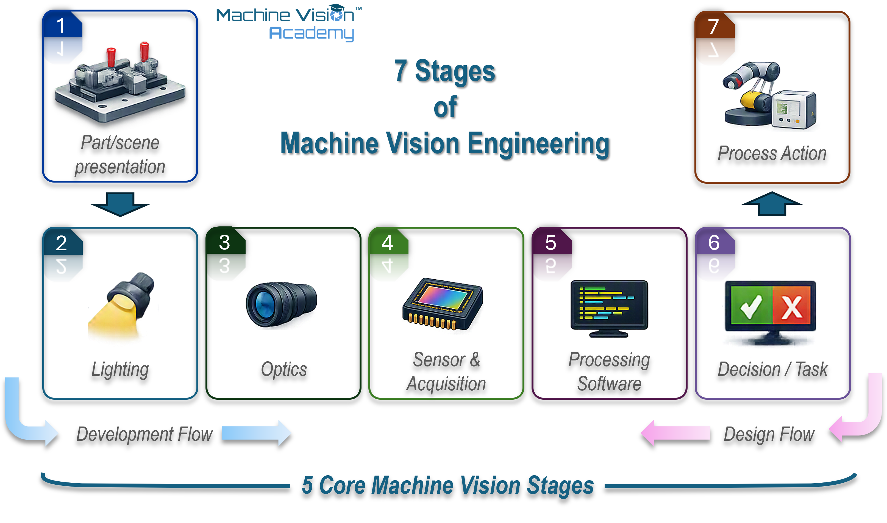
The seven stages can also be used as a compact checklist when first framing an application:
| Stage | What it does | Question to answer | Developed in |
|---|---|---|---|
| 1 Presentation | Places the part or scene in a usable state at a known acquisition instant | Is the required feature observable with controlled or intentionally bounded variation? | This section; Ch. 17 |
| 2 Illumination | Controls how the relevant feature interacts with light | Can the feature be made visible with useful and repeatable contrast? | Chapter 4 |
| 3 Optics | Forms and scales the image on the sensor | Is the required detail resolved across the necessary field and depth? | Chapter 3 |
| 4 Sensor | Converts the optical image into sampled image data | Are resolution, sensitivity, speed, dynamic range and noise suitable? | Chapter 5 |
| 5 Processing | Extracts measurements, features, locations or learned outputs | Can the required information be recovered reliably from the image? | Chapters 6–10 |
| 6 Decision | Maps the processed result to an application outcome | Does the result satisfy the acceptance, classification or localisation requirement? | Ch. 9, 16, 18 |
| 7 Action | Transfers the result and causes the required process response | Does the correct result drive the correct response for the correct product, in time? | This section; Ch. 17 |
2.5.2 Constraint-first engineering: solve the image before the algorithm
If there is one design principle worth carrying through the rest of this handbook, it is to improve the image in the physical world before compensating for it in software. Image acquisition is not a neutral front end: illumination, surface interaction, optics, focus, exposure, motion and sensor characteristics determine what information is actually recorded [95]. Once a feature has been hidden by glare, clipped by saturation, blurred by motion or never resolved by the optics, downstream processing has far less to work with. Some processing can enhance weak information; it cannot reliably recreate information that the acquisition system never captured.
Lighting normally provides the greatest leverage because the camera observes light from the scene rather than the object in the abstract. Changing the direction, spectrum, diffusion or polarisation of that light can suppress irrelevant structure and make the required feature dominant. Industrial guidance repeatedly makes the same practical point: stable, application-specific illumination simplifies camera configuration and algorithm design, whereas uncontrolled illumination creates variability that must be handled later [143]. Optics and presentation are part of the same argument. A better lens, a more suitable working distance, a polariser, a controlled background or a small change in part angle can turn a difficult image-processing problem into a straightforward one.
When a feature is difficult to detect, first ask what can be changed before the image becomes pixels:
- reduce unnecessary variation in part presentation or background;
- change light direction, wavelength, diffusion or polarisation;
- use bright-field, dark-field, backlight, coaxial or another suitable illumination geometry;
- adjust working distance, magnification, aperture, focus or optical filtering;
- shorten exposure and synchronise illumination if motion blur is the limitation;
- only then decide how much algorithmic complexity is genuinely required.
This is not an argument against sophisticated processing. It is an argument for giving that processing the best possible signal.
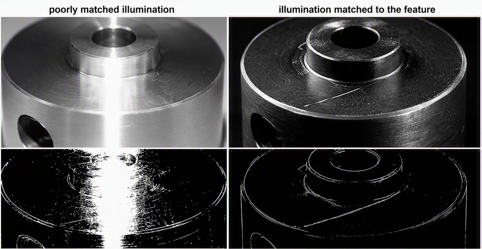
Deep learning makes this principle more important, not less. Learned models can tolerate forms of variation that would be awkward to model with hand-designed rules, but they remain dependent on the information and statistical consistency of their input images. Research on computer-vision robustness shows that blur, noise, illumination change and other common image corruptions can materially reduce model performance [144]. Experimental work with controlled active illumination has also shown that making image appearance more consistent can reduce the amount of training data required to reach a given level of performance [145]. These studies are not industrial quality-inspection recipes, but they reinforce the same engineering message: robustness in the model does not remove the value of robustness in image formation.
The temptation in a deep-learning project is easy to understand. As soon as images can be acquired, it is possible to start collecting data and training models. That can create two expensive traps:
Poor images become a poor long-term asset. The image dataset is often the most valuable reusable output of a vision application: it can support retraining, root-cause analysis, future inspections and process studies. A well-formed image may contain useful information beyond the original inspection requirement; an image that is blurred, saturated or dominated by uncontrolled reflections has already discarded some of that opportunity.
Weak image formation can be mistaken for insufficient training. In a rule-based project, a small set of images often reveals quite quickly that a feature is not visible enough. In deep learning, the team may instead respond by collecting more samples, increasing training time, trying larger models or tuning augmentation before questioning the acquisition setup. Because model performance usually changes gradually rather than failing for one obvious physical reason, the point at which the image itself is inadequate can be harder to recognise.
The model may learn nuisance variation that the machine could have removed. If background, illumination, reflections or pose vary unnecessarily in the training set, a model may devote capacity to those factors instead of the feature that matters. Data augmentation and broader training data are valuable tools, but they should represent variability the deployed system genuinely needs to handle, not compensate by default for an avoidably unstable imaging station.
In our experience, one of the easiest mistakes in a deep-learning vision project is to start model development as soon as the first usable images appear. Resist that pressure. Spend enough time proving that the image formation is as strong, stable and informative as it reasonably can be before committing to large-scale data collection.
Waiting for a different light, lens, filter or fixture can feel like lost development time. Collecting and labelling thousands of images only to discover later that the feature was poorly illuminated is usually much more expensive.
2.5.3 How the chain interacts: propagate the requirement end to end
The chain is drawn from presentation to action because that is the direction in which information flows during operation. Design, however, starts from the required outcome. A vision engineer should not begin with the question “which camera should I use?” but with a measurable description of what the system must decide or measure, under what production conditions, and with what timing and confidence. From there, each stage constrains the stages around it. This systems view is consistent with the broader computer-vision engineering principle of modelling the image-formation process and testing the complete method under the conditions in which it is expected to operate [146].
Consider a simplified requirement to detect a surface defect approximately 50 micrometres across. That feature must first be represented with enough spatial information and contrast to distinguish it from normal surface variation. The required field of view and sampling then constrain sensor resolution and optical magnification. Magnification, sensor size, working distance and aperture influence lens choice and depth of field; depth-of-field requirements feed back to how tightly the part height or pose must be controlled. The material and defect geometry constrain illumination because a scratch, dent, contamination mark and colour change interact with light differently. Throughput then constrains exposure time, triggering and processing time. A requirement that initially sounds like a single number therefore becomes a coupled set of optical, mechanical, electrical and computational constraints.
The same coupling appears in less obvious forms. Increasing magnification may improve spatial sampling but reduce field of view and depth of field. Shortening exposure may reduce motion blur but require more illumination or sensor sensitivity. A wider aperture may increase signal but reduce depth of field. Relaxing mechanical fixturing may simplify the machine but increase the search range and algorithmic burden. Moving processing to a shared server may increase compute capacity but add network timing and a larger failure domain. None of these choices is inherently good or bad; the engineering task is to make the trade-offs explicit and keep the whole chain inside the requirement envelope.
This is why feasibility work should try to expose contradictions before hardware and software become fixed. If the required field of view and smallest feature imply an optical setup that cannot maintain focus across the actual part-height variation, the useful result of the feasibility study is not a clever algorithm - it is discovering that the requirement, presentation or imaging geometry must change. The later design framework formalises this process, but the habit starts here: trace important requirements through every stage and ask where they become difficult, sensitive or mutually incompatible.
During operation, the system runs from presentation to action. During design, work backwards from the requirement:
- What decision or measurement must the system deliver, and what action follows?
- What image information is necessary to support that result?
- What illumination, optics and sensor conditions are required to capture that information?
- What presentation, timing and environmental controls are needed to keep those conditions valid in production?
Then run the reasoning forwards again to verify that the complete image-to-action chain closes within the required cycle time, accuracy and reliability.
2.5.4 Professional roles, standards and certification landscape
Machine vision sits across several engineering disciplines. A single deployment may involve illumination and optics, image sensors, mechanics, electrical design, software, industrial networking, robotics, controls, metrology, data handling and production validation. It is therefore common for different organisations to divide the work differently. In a small team, one engineer may cover most of the chain; in a larger programme, responsibility may be distributed across specialists.
Typical roles around a machine-vision project include:
Vision or applications engineer - develops the imaging concept and normally owns much of the illumination, optics, acquisition and image-processing chain.
Systems integrator or machine builder - combines vision with mechanics, controls, safety, motion and the wider machine architecture.
Controls or automation engineer - integrates triggering, sequencing, communications, interlocks and the resulting machine actions.
Metrology or quality engineer - defines measurement traceability, acceptance criteria, capability studies and validation where the vision result is used quantitatively.
Data, AI or software engineer - increasingly involved where deep learning, dataset infrastructure, deployment pipelines or substantial application software form part of the solution.
End user, process engineer and maintenance team - provide the production knowledge that defines real variation, failure modes, maintainability and long-term ownership.
The boundaries between these roles are deliberately porous. A good vision engineer does not need to be the plant controls expert or the mechanical designer, but must understand enough of those disciplines to recognise when they constrain the image or the final action. Equally, software expertise alone is not a substitute for understanding image formation. That breadth is one reason machine vision is often learned through a mixture of formal study, vendor and association training, laboratory work and production experience.
At the time of editing, one of the most established broad professional credentials in the machine-vision industry is the Association for Advancing Automation (A3) Certified Vision Professional (CVP) programme [147]. CVP-Basic covers the foundations of machine vision through courses in fundamentals, optics, lighting, cameras and image sensors, image processing and vision-system design [148]. CVP-Advanced extends the scope into topics including advanced optics and lighting, 3D vision, machine learning, line-scan imaging, high-speed systems, vision-guided robotics, non-visible imaging, colour, metrology, advanced image processing and system integration [149]. A3 currently offers proctored Basic and Advanced examinations, and states that individual CVP certification is valid for five years [147].
| Programme | Purpose / scope | What it signifies |
|---|---|---|
| A3 CVP-Basic | Broad foundation: machine-vision fundamentals, optics, lighting, cameras/sensors, image processing and system design. | Individual has demonstrated a common baseline of machine-vision knowledge. |
| A3 CVP-Advanced | Advanced application topics including 3D, machine learning, line scan, high speed, robotics, metrology and integration. | Individual has demonstrated broader and deeper knowledge across advanced vision topics. |
| EMVA 1288 User / Expert | Specialist knowledge of EMVA 1288 camera/sensor characterisation and use of its measurement data. | Individual has demonstrated knowledge of this specific camera-characterisation standard, not a general machine-vision qualification. |
Professional certification should also be distinguished from company-level integration certification. A3 operates a Certified System Integrator programme intended to give end users a benchmark when selecting integration companies; the criteria include company experience and qualified technical personnel rather than certifying a single individual [150]. This distinction is useful for practitioners: an individual credential says something about a person’s demonstrated knowledge, while an integrator credential addresses the capability and track record of an organisation.
In Europe, the European Machine Vision Association (EMVA) has a different but equally important role. It develops and supports industry standards and educational resources rather than offering a direct European counterpart to the broad CVP qualification. Its EMVA 1288 programme provides User- and Expert-level certification specifically around camera and image-sensor characterisation [151]. The EMVA also hosts GenICam, the generic camera-interface standard used across interfaces such as GigE Vision, USB3 Vision and CoaXPress [152]. At the time of editing, the long-running EMVA 1288 characterisation standard is also being progressed towards the international ISO 24942 standard; ISO lists ISO/DIS 24942 as under development in 2026 [153]. These details will inevitably evolve, so readers should treat the named programmes as examples of the current professional landscape rather than a permanent catalogue.
A recognised qualification is valuable because it establishes vocabulary, fundamentals and a common technical baseline. It does not replace application judgement.
Machine vision is learned by repeatedly connecting theory to real images, real parts and real production constraints: seeing how a surface changes under a different light, discovering why a nominally correct lens does not provide enough depth of field, or tracing an intermittent false reject back to timing, vibration or presentation. Certification can structure that learning; experience turns it into engineering judgement.
There is also a broader educational challenge. Machine vision is used widely in manufacturing, yet access to structured, vendor-neutral learning remains uneven across universities, companies and regions. One of the longer-term aims of the Machine Vision Academy is therefore to make reusable educational material openly available so that individuals, educators and academic institutions can build courses around a common industrial baseline. At the time of writing this remains an ambition rather than an established accreditation route, but the direction is intentional: make the fundamentals easier to learn, then allow institutions and professional bodies to build recognised learning pathways on top of them. Current project material is intended to be released through MachineVisionAcademy.org as that programme develops.
The broader message of this section is that machine vision is not a sequence of isolated component choices. It is an engineered chain, owned by people who must reason across the boundaries between image formation, computation and automation. The next section turns that principle into a more explicit method for approaching a new vision problem from the requirement onwards.
2.6 Approaching a vision problem: a design framework
2.6.1 From inspection requirement to imaging specification
Content status: Placeholder.
This subsection has not yet been drafted or technically reviewed.
2.6.2 Characterising the feature: contrast, scale, geometry, tolerance
Content status: Placeholder.
This subsection has not yet been drafted or technically reviewed.
2.6.3 Detection versus measurement: how the task drives every later choice
Content status: Placeholder.
This subsection has not yet been drafted or technically reviewed.
2.6.4 A worked decision path, cross-referenced to later chapters
Content status: Placeholder.
This subsection has not yet been drafted or technically reviewed.